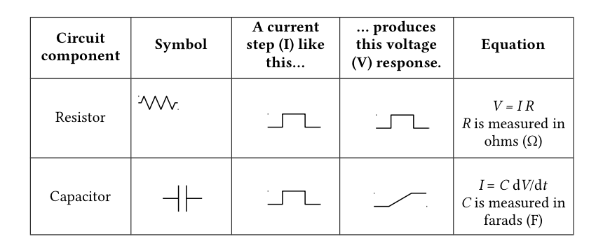
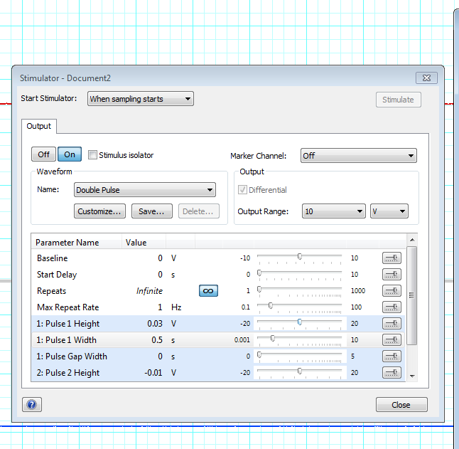
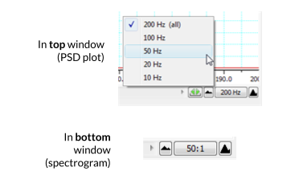
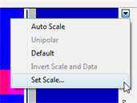
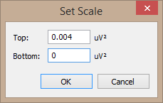
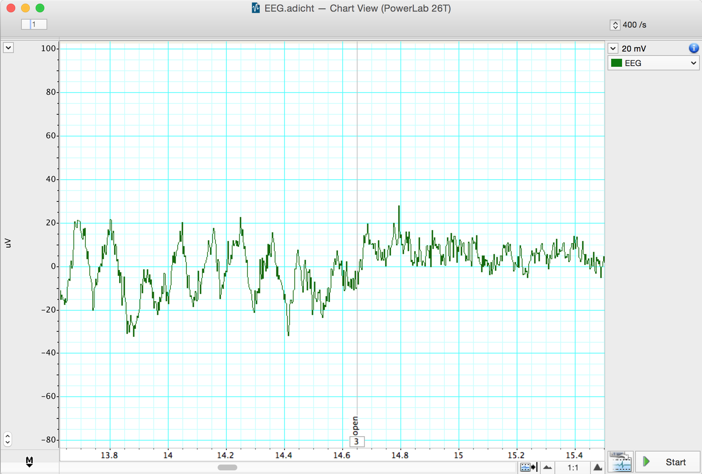

Lab Manual#
Welcome to BIPN 145#
This is a course about how we study the nervous system. You’ll be asked to think, plan, and write like a neuroscientist.
This lab manual describes the set of experiments you’ll be conducting over the course of the quarter.
This course is for everyone.#
Neuroscience is a diverse discipline, with folks from many different academic and personal backgrounds. We’ll be working together to create an equitable and inclusive environment of mutual respect, in which we all feel comfortable to share our moments of confusion, ask questions, and challenge our understanding.
Everyone should be able to succeed in this course. If you do not feel that is the case, please let us know.
Modeling Neural Membranes#
The brain as a circuit board#
We often describe the brain in terms of circuits, which is a useful and pretty accurate metaphor. In our Modeling Neural Circuits lab, you’ll encounter two different ways to model the brain: using an online simulator and with a physical simulation on a breadboard. Both use the fundamental concepts of how electricity flows through substances to generate a working model of the biophysical properties of a neuron.
This introductory page will provide some background information to help you navigate the concepts of this lab.
Modeling resistance#
A resistor converts electrical energy into heat when current flows through it. A current flowing through a resistance creates a voltage drop across that resistor, described by Ohm’s law:
Ohm’s Law
V = IR
Symbol |
Meaning |
|---|---|
V |
voltage (Volts) |
I |
current (Amps) |
R |
resistance (Ohms, Ω) |
In a neuron, the resistance is determined by the opening and closing of ion channels, which allow current to flow in and out of the cell. When more ion channels are open, more ions are able to flow. Ion channels can be represented with resistors in an RC circuit, since they resist the flow of electricity.
It’s important to note the units in the equation above: 1 Amp flowing through a 1 Ohm resistor produces 1 Volt across the resistor. In electrophysiology, we typically work with different scales of numbers:
Unit |
Equivalent |
|---|---|
millivolts (mV) |
10⁻³ V |
nanoamps (nA) |
10⁻⁹ A |
megaohms (MΩ) |
10⁶ Ω |
Sometimes you’ll see Ohm’s Law with conductance instead of resistance. Conductance (measured in siemens and often denoted by g) is the inverse of resistance. In other words, it’s equal to 1/R.
Kirchhoff’s circuit laws#
Kirchhoff’s Laws
Kirchhoff’s laws state two relatively intuitive facts:
The voltage at a given point in a circuit is uniquely defined. Thus, if there are two (or more) paths to go from point A in a circuit to point B, the voltage drop along each of those paths is the same.
The voltage drops around a closed loop must sum to zero. The sum of all currents going into a point equals the sum of all currents going out of it.
Modeling capacitance#
Capacitors are defined by two conducting substances separated by a non-conducting substance in the middle. Capacitors accumulate electric charge on the insulator. The accumulated charge creates an electric field between the conductors and stores electrical energy. Salty fluids that make up the intra- and extracellular solutions of the cell are conductive, the lipid bilayer is not. Therefore, the neural membrane acts as a capacitor.
To summarize and add a couple useful symbols:

Modeling concentration gradients#
In a neuron, there’s also a steep concentration gradient due to the different concentrations of ion on either side of its membrane. This is the basis of the neuron’s resting potential. The inside of the cell is more negative than the extracellular cell space – typically by about -60 mV, depending on the cell type. We’ll use batteries to model this offset of voltage.
Putting it all together#
With these components – resistors, capacitors, and a battery – current flow in a neuron can be modeled. In reality, there are many different ion channels, and multiple different ion conductances. We’ll simplify each of these into one membrane resistance, and we’ll model the membrane of the cell with one capacitor.
When we send current into a circuit with a capacitor, the capacitor will charge. In both a neuron and an electrical circuit, voltage rises to a steady state level asymptotically in the response to an external current (e.g., from an action potential or passively passing charge). Once the external current is shut off, the voltage drops in a similar asymptotic way. As you’ll discover today, this charging time course depends on a few different factors.
These characteristics of the membrane voltage can be measured with a simple voltmeter in the RC circuit. Opening more ion channels (or resistors, as in this RC circuit), which decreases resistance and increases conductance, will express a more rapid increase in voltage on the voltmeter, visually demonstrating the properties of resistance in a neuron.
We can calculate a time constant, which represents the time it takes to reach a steady state after a change in voltage across the membrane:
Time Constant
τ = RC
Symbol |
Meaning |
|---|---|
τ |
time constant (seconds) |
R |
resistance (ohms) |
C |
capacitance (farads) |
Breadboards & electronics are useful tools for neuroscience research#
Lastly, these types of circuits are really useful for designing neuroscience experiments. Many labs rely on breadboards and microcontrollers (e.g. Arduino) to create custom setups. Once you know how to wire up a circuit and program an Arduino, you can do pretty much anything.
This video will explain how to complete the activities in our lab on a breadboard.
Neuromembrane#
About Neuromembrane
Neuromembrane was made by a team of University of Alberta researchers and a company known as Atmist. Many thanks to Christelle Sabatier, Michael Wright, and Declan Ali for sharing similar lesson plans. Their ideas are integrated here.
Part I: Resting membrane potential#
First, we’ll explore the properties of the membrane that lead to a resting membrane potential. By the end of this part, you will be able to:
Explain how a negative resting membrane potential is maintained
Identify the factors that determine and maintain resting membrane potential
Use the Goldman-Hodgkin-Katz to calculate the membrane potential given the concentrations and permeabilities of K+ and Na+
Generate simulation data to illustrate the dependence of the resting membrane potential on K+
Protocol#
Go to https://neuromembrane.biology.ualberta.ca/ and click “Continue to App.”
To open the resting membrane potential simulation, click on the top left to open a menu of stimulations. Choose “Resting Potential Simulation.”
On the right hand side, you’ll see a membrane. The area below the membrane is the inside of the cell. The area above the membrane is the outside of the cell.
This simulation will open by default without any leak channels or pumps. Let’s first add a couple of leak channels to the membrane and observe what happens. Click the plus sign next to “LEAK CHANNELS” to add a Na+ and K+ channel to the membrane.
Reflection
These single channels represent many, many channels in the membrane that are allowing either Na+ or K+ to cross. By default, these will open with a relative permeability of 0.05:1 (Na:K). Note that at these default settings, there is also equal [Na+] and [K+] inside and outside of the membrane.
First, we’ll observe what happens over time when we have more K+ permeability, but equal ion concentrations. Before running the simulation, write a 1-2 sentence prediction for what will happen in Table 1.
Once you have your prediction, click on the play button to run the simulation. You can also change the speed so that it will run faster. What happens to the voltage over time? Why is the voltage across the membrane this value? Write your observations in Table 1.
In order to modify the concentration across the membrane, we’ll need a Na+/K+ pump. Click the plus button next to Na+/K+ pump to add one to the membrane.
Notice that the CONCENTRATION SETTINGS have now changed as well. Change these concentrations back to the previous settings — where all of the concentrations are 50 mM. Before running Simulation #2, write your 1-2 sentence prediction in Table 1.
Run Simulation #2 and observe what happens to the membrane potential. Has adding a Na+/K+ pump changed anything about the resting membrane potential? Why or why not? Add your observations to the table. For this simulation, note that we’re just using the Na/K pump to be able to change the concentration across the membrane. The Na/K is not operational (yet).
Go back to the settings page. In real neurons, ion concentrations are not equivalent. Change the concentrations of K+ and Na+ back to their default values (Na: 10 mM inside, 140 mM outside; K+: 140 mM inside, 4 mM outside) to reflect more biological values across the membrane. Write your prediction for Simulation #3 in the table.
Run the simulation again and observe what happens to the membrane potential.
Log your predictions
What happens to the voltage over time? Why is the voltage across the membrane this value? Write your observations in a table formatted to one like Table 1, below. Here is a Google Spreadsheet Template.
Table 1. Simulation predictions & observations
Sim # |
Types of Channels |
[Ion] |
PNa/K |
Prediction |
Observation |
|---|---|---|---|---|---|
1 |
Leak channels only |
All 50 mM |
5 Na+; 100 K+ |
||
2 |
Leak channels & Na+/K+ pump |
All 50 mM |
5 Na+; 100 K+ |
||
3 |
Leak channels & Na+/K+ pump |
Na+ high outside; K+ high inside |
5 Na+; 100 K+ |
||
4 |
Leak channels & Na+/K+ pump |
Na+ high outside; K+ high inside |
100 Na+; 5 K+ |
||
5 |
Leak channels & Na+/K+ pump |
Na+ high outside; K+ high inside |
100 Na+; 100 K+ |
Using the Goldman-Hodgkin-Katz (GHK) equation for Na+ and K+ only, calculate what the voltage across the membrane should be for simulation #3 and show your work. Does this match the voltage in the simulation? Answer Q1 on the quiz. Report your answer in mV.
Here are a few hints to help you:
P is relative permeability; other constants can be found on the lecture slides.
To simplify, you may determine a constant for the first portion of the equation (RT/F) and use that for future calculations.
You can use “Insert > Equation” in Google Docs or Microsoft Word to show your work, or simply jot it on paper, take a picture, and paste it here.
Google search has a built-in scientific calculator! You can bring it up by typing any formula into the search bar. For example, type
=5*150into Google Search.
Q1. Calculation of GHK
Using the GHK equation for Na⁺ and K⁺ only, calculate the voltage across the membrane for simulation #3 and show your work. Does this match the voltage in the simulation? Report your answer in mV.
Finally, let’s check to see how much ion permeability matters. Go back to the settings page and reverse the Na+ and K+ permeabilities.
Write your prediction for Simulation #4 in Table 1.
Run Simulation #4 and observe what happens. Record your observations in Table 1 and respond to the question below. Answer Q2 on the quiz. Report your answer in mV.
Q2.
With the high permeability to Na⁺ and low permeability to K⁺, what is the resting membrane potential? Report your value in mV out to one decimal point.
On the settings page, set both the Na+ and K+ permeabilities to 100. Write your prediction in Table 1.
Run the simulation to see what happens, record your observations, and respond to the question below. Answer Q3 on the quiz.
Q3.
Which of these simulations best models a typical neural membrane?
Next, we’ll check to see whether or not the membrane potential depends on [K+]out. Reset the permeabilities and ion concentrations to the default values.
Systematically change [K+]out to fill in the table below. Hint: if you hover over the chart on the left, you’ll be able to see the precise voltage.
Q4
Complete Table 2 and then answer Q4 on the quiz. You can use the Table 2 tab on the Google Spreadsheet template.
Table 2. Dependence of Vrest on [K+]out
[K+]out (mM) |
Vrest (mV) |
|---|---|
4 |
|
10 |
|
20 |
|
50 |
|
200 |
Click the “Toggle Circuit Diagram” button on the top right hand corner to overlay circuit components.
Q5.
In a few words, describe what each of the following are modeling in the neuron. The first one has been done for you. Once you’re done, answer Q5 on the quiz.
Component |
What it models |
|---|---|
I_Na |
sodium current across the membrane |
g_Na |
|
E_Na |
|
I_K |
|
g_K |
|
E_K |
Part II: Passive membrane simulation#
In this part, you’ll set up a simulation that models one portion of an axon or dendrite. By the end of this part, you will be able to:
Describe how voltage passively spreads through an axon or dendrite
Understand length and time constants
Determine how the passive spread of voltage is affected by diameter and membrane capacitance
Protocol#
Go to https://neuromembrane.biology.ualberta.ca/ (if you’re not already there) and open up the “Passive Membrane Simulation” (or Cable Theory Simulation) in the menu in the top left corner.
Add an external recording electrode that is two length constants (λ) away from your stimulating electrode by clicking the + button and changing the value after the second recording site. Answer Q6 on the quiz.
Inspect the parameters on the left hand side of the screen. To see how these electrical components are being modeled, click on 3D on the bottom to toggle to a 2D diagram, and then choose “Show Circuit Diagram.” Answer Q7 on the quiz.
Re-set the cable settings and click on “CREATE SIMULATION” to run our first iteration of this passive current injection. Observe the top plot to fill out row one in Table 3. For your “observations,” take a close look at the Voltage vs. Time plot.
Reflection
Why is our current injection this shape when recorded across the membrane?
Table 3. Current injection results
Sim # |
Diameter |
Cm |
Peak voltage at 2λ |
Distance to 2λ electrode |
Voltage at 0λ electrode @ 28 ms |
Voltage at 2λ electrode @ 28 ms |
Observations |
|---|---|---|---|---|---|---|---|
1 |
5 µm |
1 |
|||||
2 |
2 µm |
1 |
|||||
3 |
2 µm |
2 |
The dorsal root ganglion axon of a giant blue whale has a diameter of ~2 µm. In the CABLE SETTINGS on the left, change the diameter of the simulated axon to model this axon.
Reflection
With this smaller diameter of 2 µm, do other parameters of the membrane (bottom of the CABLE SETTINGS window) change? If so, why?
Run the simulation with the smaller diameter and observe the Voltage vs Time plot again. Hint: you can use the Autoscale button (![][image2]) if the trace goes off the plot. Fill out Table 3 for this 2 µm cable simulation.
Double the specific capacitance of the membrane, from 1 to 2 μF/cm2. Describe what happens to the time constant and the resulting voltage over time plot with more capacitance in Table 3.
Optional: Later in the course, you may want to use the Neuromembrane simulator to model the action potential. There is a protocol here.
RC Circuits#
Let’s build a circuit that models the passive membrane simulations you performed in the last part of our Modeling Neural Membranes lab.
Parts |
Cables & Adapters |
|---|---|
PowerLab & Computer |
DIN8 to BNC adapter (1) |
1 µF capacitor |
BNC to double banana adapter (1) |
Resistors: 3 kΩ, 15 kΩ, 33 kΩ, 100 kΩ, 220 kΩ, 330 kΩ |
Banana plug cable (4) |
Alligator clips (4) |
Getting familiar with your breadboard#
Breadboards are really useful ways to prototype and model electrical circuits (and in our case, neural circuits). Some holes on the breadboard are connected together, so putting wires into connected holes provides an electrical contact between them. These connections are organized with two main rails (rows) on the sides, typically used for power, and many columns. Knowing how these components are connected is crucial to understanding how to use a breadboard.
Building an RC Circuit#
Build the circuit below. We’ll use the OUTPUT of your Powerlab to send a pulse of current through the circuit.
It helps to start with the output ends in the power rails and work your way around. The red wire from the PowerLab is the positive terminal.
CAUTION: Do not connect the + and - terminals. This will short the circuit, heat, and melt the plastic. Check that your circuit is set up properly before turning on the pulse from your computer.
Attach single BNC adapters to the + and - outputs of the PowerLab.
Attach a red banana cable to the + terminal and a black banana cable to the - terminal of your PowerLab.
Attach the banana cables to red and black jumper wires using alligator clips, and insert the black and red jumper wires to the power rails, as shown in the circuit.
NOTE: Ensure that all circuit components are properly inserted into the breadboard. The wires should make contact with the metal strips inside the breadboard.
Add additional jumper wires, a resistor, and a capacitor, as shown in the circuit.
We’ll use the PowerLab as our voltmeter, to record voltage in our circuit. Plug a BNC to DIN8 adapter and double banana adapter into Input 1 of the PowerLab.
Connect the ground/reference (black, -) side of the double banana adapter to the circuit ground with alligator clips.
NOTE: The “ground” in this circuit is really going to be our reference electrode. It should be connected to the black side of Input 1.
Connect the “hot” pin (red, +) of the double banana adaptor to the “record here” point on the circuit diagram.
Open LabChart with the Circuit Lab settings (http://bit.ly/labchart)
Set up the Stimulator to stimulate with 1 V for 1 second. Make sure the range of your recording channel is 1 V. Switch the stimulator to “on”.
Open Scope View and press >Start. You should see a waveform on your screen.
Autoscale!
You may need to Autoscale the channel (right click) to be able to see the entire trace.
Q8.
The time constant should equal 𝛕 = RC. What should the time constant be (in seconds), given the 100 kOhm resistor and 1 uF capacitor in this circuit?** Mind your units. Answer Q8 on the quiz.
Measure your time constant#
We can also measure the time constant by measuring how long it takes the curve to rise or decay. One time constant (𝛕) is defined by when the circuit rises to 63.2% of its total charge (alternately, we could see how long it takes to decay 1/e, about 37%).
To empirically measure your time constant, follow these steps.
Make sure your voltage is very close to zero at baseline.
Find the maximum voltage (Vmax) that your circuit reaches.
Calculate 0.632 * Vmax
Using the marker tool (right click anywhere in the window and choose “Clamp to trace”) find the point in your trace that is equal to the value calculated in Step 3.
Move your cursor to the start of the stimulus. In the upper right corner of the window, you’ll see something that says Δt. This is the change in time since the mark on the curve and your time constant.
From theory to observation
What is your recorded time constant (𝛕) with 1 V stimulation, a 100 kΩ resistor, and a 1 uF capacitor? How close is the recorded time constant to the value you calculated with 𝛕 = RC?
In engineering, 5𝛕 is consisted the time it takes for a capacitor to fully charge (technically, its at 99% of full charge). The time constant is symmetrical for charging as well as losing charge. How long would it take this patch of membrane to return to baseline, then? What does that mean for computation happening in this membrane?
Record and plot your time constant with different resistors#
Next, we’ll see how the time constant of the circuit changes in response to the resistance strength. Use the following resistors in your circuit, and use the steps above to determine the time constant for each.
**Table 4. Resistance vs. Time Constant
Resistance |
Time Constant |
|---|---|
3 kΩ |
|
15 kΩ |
|
33 kΩ |
|
100 kΩ |
|
220 kΩ |
|
330 kΩ |
Plot your results
Plot the time constant against the resistance. Answer Q9a and Q9b on the quiz. Look for the corresponding tab on the Modeling Neural Membranes Google Sheet template.
Plotting Tips#
Google Sheets: Use the template provided above and use
Insert > Chart > Scatter.Add a trendline under
Customize > Series > Trendline.Make sure that none of the markers for your points are cut off. If they are, change your axes so that they fit.
Enter your values into the table without units so that Sheets will recognize them as numerical. You can indicate the correct units in the table and axes labels.
Python: Use the Plot Scatter notebook!
Check your time constant against the literature#
Let’s circle back to biology. Are the time constants you measured similar to what you’d find in a real neuron? Check this website to look at a collection of examples from the literature: https://neuroelectro.org/ephys_prop/index.html
Choose a paper from the example above and look for the reported time constant. Is the time constant in your circuit similar? If not, why might it be different?
Troubleshooting#
Observation |
Likely Issue |
Possible Solution |
|---|---|---|
There isn’t any voltage in your circuit |
The power terminals are not connected properly Your stimulator is not on |
Make sure everything is connected correctly on your breadboard. Consult https://wiring.org.co/learning/tutorials/breadboard/index.html Check that the stimulator panel is switched on, and that you pressed Start |
Your signal is really noisy |
You’re not grounded. Your pulse is not being properly sent. |
Double check your circuit is connected correctly |
You don’t see a fin-shaped waveform |
Your Scope/Chart View is not scaled properly. Your capacitor is not properly connected or broken. |
Try autoscaling Check the capacitor placement or replace it. |
You’ve got “rabbit ears” on your waveform |
Your voltage is reversed somewhere |
Check the power terminals are connected in the right direction |
String Nervous Systems#
Background & Goals#
Why are we recording from a string?#
The purpose of this lab is to get familiar with the recording equipment and software that we’ll be using in this course.
First, we’ll learn how you can configure LabChart 8 to acquire data and send out pulses of electricity. Then, you’ll record the stimulus artifact (the passively conducted signal from the stimulus) from a saline-soaked piece of string. The string mimics some of the properties of the earthworm that you’ll observe in a future experiment. This will give you the opportunity to learn how to use the stimulating and recording devices on the PowerLab, as well as reduce noise and stimulus artifacts from your recordings, before you actually have to do all of this in an experiment.
Asking questions during this lab is a great idea, and will help you succeed in future experiments.
Pre-Lab#
Before the lab, watch this video and read the protocol below:
Today you will:
Configure a recording experiment in LabChart 8.
Determine how to record signals from a string.
Identify sources of electrical noise in your rig.
This lab was adapted from Experiment #1 from the BIPN 105 & BIPN 145 Lab Manuals, as well as AD Instruments.
Protocol#
Supplies |
Cables & connectors |
Solutions |
|---|---|---|
String |
BNC to single banana adapter (2) |
Saline |
Dissection tray |
BNC to double banana adapter |
|
PowerLab 26T, connected to computer |
BNC to DIN8 adapter |
|
BioAmp |
Alligator clip adapters (2) |
|
Sewing pins (2) |
Banana plug cords (2) |
|
Faraday Cage |
||
Large Petri Dish |
||
Eyedropper |
I. Setting up LabChart 8#
LabChart 8 is the software we’ll be using to record electrophysiology data. Before performing our experiment, we need to set up LabChart to acquire and display the data as we want.
Turn on the PowerLab 26T.
Open LabChart 8. You should see that the PowerLab is connected with a green check mark.
Open a new experiment by choosing the New button (bottom left-hand corner).
First, we need to decide how many channels to record. Go to Setup > Channel Settings.
At the bottom of the window, change the number of channels to 3, and make sure that they are all on (box on the left is checked).
Rename the first channel “Stimulus” and the second channel “Raw Recording”.
Set the range for Channel 1 (your “Stimulus” channel) to 5 V.
Note: The range determines the range of values the PowerLab will record, and when using the BioAmp (later in this lab), it will actually change the amplification.
Set the range for Channel 2 (your “Raw Recording” channel) to 100 mV.
Make the sampling rate for Channel 1 “40k/s” and ensure that “Same sampling rate for all channels” is checked.
Make sure that the far-right column says “No calculation” for all three channels.
II. Finding sources of electrical noise#
One of the biggest issues in electrophysiology is noise from overhead lights and other electronics in the room. It’ll help to get an understanding of where noise in your rig is coming from.
Connect a DIN8-BNC adapter and a BNC to double banana adapter to Input 2 of the PowerLab. Plug in a red banana cable to the positive (red) side of the connector.
Hold the lead (the end of the banana cable) in your hand.
In the Channel Settings window, click on Input Amplifier for Channel 2. The Input Amplifier window will show the voltage that you’re recording. This allows for precise setting of the input range for a recording channel and provides filtering options.
The signal at your rig may be variable. To adjust the sensitivity of the channel, choose an appropriate range setting from the Range drop-down list in the Input Amplifier dialog.
Note: The number displayed in the range menu indicates the maximum input voltage currently selected. Notice how as you decrease the range the vertical scale changes and the small rhythmic deflections that appear on the signal trace increase in amplitude.
Choose a range such that your signal fills about ⅔ of the window.
Observe the change in the recorded voltage with the electrode lead held overhead (near the lights) and then near the ground (away from the lights).
Try the lead inside of your Faraday cage. Is the signal more or less noisy?
Tip: Is your Faraday cage actually grounded? How could you ground it?
Questions for reflection
How does the signal change as you move the electrode lead around?
What do these sources of noise mean for our recording configuration, and our attempts to record electrical activity?
III. Recording stimulator outputs#
We’ll use our PowerLab as a stimulator that can send voltage pulses into our specimen. We can change the timing, shape, amplitude, and repetition of these stimuli via the Stimulator window in LabChart. We’ll directly record these stimuli by sending the output of the PowerLab into an input.
Change your view to Scope view, which looks like the sweeps of an oscilloscope. The advantage of Scope View is that it allows the overlay and averaging of your data.
In Scope view, set the Duration to 20 ms. This changes how long each sweep of data is.
Remove the DIN8-BNC adapter & cable from Input 2.
On the PowerLab, connect the (+) Output to Input 1 using the BNC cable and DIN8-BNC adapter.
Go to Setup > Stimulator to open the Stimulator window. This is the window where you can modify the shape, timing, and amplitude of the stimulus output.
Make sure that the Waveform Name is set to Pulse.
Change the range of the Pulse Height to -5 to 5 V by clicking the ruler button next to the Pulse Height option.
Configure the following by clicking and then editing the values in the window:
Parameter
Value
Start Delay
1 ms
Pulse Width
0.1 ms
Pulse Height
0.150 V
Close the Stimulator window.
Go to Setup > Stimulator Panel to open a smaller window where you can directly modify the stimulus. This window can stay open while you’re recording.
Press > Start in the main LabChart GUI.
Increase the stimulator voltage (Pulse Height) and watch the level change in the window.
Try a negative stimulus voltage.
Open the Stimulator window again and vary the delay, duration, and waveform shape, and see what happens. If your recording is cut off, how can you fix it? (Hint: see Visualization tips in Meet Your PowerLab.)
Questions for reflection
Why would you want to record the stimulus output?
Why would you want to delay the stimulus output?
Why would you want to send different shapes of waveforms?
IV. Recording the stimulus artifact#
Lastly, we’ll add an amplifier (the BioAmp) to our circuit, and use this to record from a string soaked in saline. The string doesn’t have a nervous system, but we’ll add some voltage with our stimulator and observe the change in voltage from another point on the string.
Set up your string stimulation experiment#
Your setup for the string stimulation will look like this:

Remove all of the cords from the PowerLab.
Connect your two single BNC to banana cable adapters into the (+) and (-) Outputs of the PowerLab.
Note: The color of these does not matter, but it can help to be consistent — red for the anode (+ Output) and black for the cathode (- Output).
Using banana cables, connect the (+) Output to your anode stimulating electrode (the sewing pin) and the (-) Output to the cathode stimulating electrode.
Connect the BioAmp to the PowerLab.
Connect the (+) recording, (-) recording, and ground needle electrodes to your string and into the corresponding spots on the BioAmp.
Note: The colors on the BioAmp defy convention — consult the diagram above for clarity.
Change the configuration of your recording so that you are now using the BioAmp:
Go into Setup > Channel Settings.
Make sure that BioAmp is listed under the Input Amplifier column for Channel 3.
Uncheck Channel 2 — we don’t need to record from it anymore.
Change the name of Channel 3 to “BioAmp Recording.”
We’ve removed our ability to directly record the stimulus output, so we need another way to know when the stimulator sends outputs. Open the Stimulator Settings and set the “Marker Channel” to Ch1 (your “Stimulus” channel). With this setting, LabChart will put a small tick on Channel 1 to show you when the stimulus was sent.
Note: This marker tells you when the stimulus was sent, but does not indicate the height or length of the stimulus. This means you need to label your pages with your stimulation parameters.
Stimulate your string!#

Place your string in saline in the small petri dish, and give it a few minutes to soak. If it’s not completely soaked, you will not get a stimulus artifact.
Note: If your string dries out during the experiment, you can use an eyedropper to add saline to it.
Lay the string out on the dissection tray, with the stimulating and recording electrodes laid out as in the diagram above.
Set the stimulator voltage to 1 V, and press > Start. You should see your stimulus recording on Channel 1, as you did before, but you should also now have a recording on Channel 3 (BioAmp Recording).
Change the scaling if you cannot see the entire deflection.
If you do not see anything, increase the voltage (no more than 5 V).
Note: This recorded deflection is called the stimulus artifact. This artifact can exceed the range of our amplifier. Recovery from the artifact should be rapid, however, so that the baseline is reached within one millisecond or so after the stimulus pulse.
Question for reflection
Is the amplitude of the stimulus artifact the same as the amplitude of the stimulus? Why or why not?
Increase the stimulator voltage, and stimulate again. What happens?
Note: Change the name of Scope pages, or make comments on the recording, to indicate what you’ve done during that run of the stimulus. You need to know the metadata for the experiment once you’re ready to export.
Change the stimulus to a negative voltage, and stimulate again. Does the stimulus artifact change?
Choose one of your pages where you have a stimulus artifact with a clear peak. Using the Marker tool, measure the latency from the stimulus to the beginning of your artifact. How much of a delay is there? How much of a delay should there be? (How fast does an electrical current flow?)
Change the location of the stimulating electrodes. How does this change the shape of the artifact?
Remove the ground electrode. How does this change your recording?
Save your file & export your data#
LabChart buffers files to disk in case of a power failure or computer crash, but it’s wise to save work frequently. Saving files in LabChart is the same as saving any file on your personal computer.
Please backup your LabChart data files to the Google Drive you set up at the start of the quarter.
Save the settings file for your experiment by going to File > Save As Settings File in LabChart. Save it in a safe place (not locally on the computer). You will need this settings file for the earthworm experiment.
Save the data file for your experiment by going to File > Save As and save as a LabChart Data File (.adicht).
Go to the Scope page for two of your favorite string stimulation experiments that you can compare and contrast — for example, two different voltages, or with two different distances between the stimulator and recording electrodes.
Plot your recordings (separately or on the same axes — be sure to label two different recordings if overlaid). Make sure your axes are labeled with units. You can create these plots in Python or Excel.
Copy your plots into a Word or Google document.
See your instructor’s Canvas assignment for detailed directions about what else you need to submit.
Troubleshooting#
Observation |
Likely issue |
Possible solution |
|---|---|---|
You can see the stimulus marker on Channel 1, but no stimulus artifact on Channel 3 |
Your string may not be soaked in saline well enough |
Add saline to the string |
The recording trace is cut off |
Your visualization needs to be re-scaled, or your range is too small |
Right-click on channel and choose Auto Scale (see Visualization tips above); change the range on your recording channel |
Your string recording trace has clear 60 Hz noise |
You’re not grounded, or there are ground loops |
Make sure your Faraday cage and ground electrode are both grounded to the back of the PowerLab. If this doesn’t help, consult an instructor. |
Earthworm Electrophysiology#
Background & Goals#
Earthworm essentials#
Earthworms are a member of the Annelida phylum, which includes segmented worms such as the ragworm and our soon-to-be-friend, the leech. We’ll be working with earthworms in the Lumbricidae family.
Earthworms are laid out with a mouth at one end, and an anus at the other. In the middle is the clitellum, a reproductive gland that can secrete a material that helps them form a cocoon. The clitellum is only visible in older worms that are ready to reproduce.
Earthworms have a closed nervous system, with one main blood vessel running down the length of their body. They breathe through their skin, so it is important to keep it moist. They crawl using muscles that are located just underneath the epidermis.

Earthworm nervous system#
Earthworms have a pretty simple brain: it’s actually a fused pair of nerve ganglia, mostly located in their third segment. The earthworm has one main nerve cord on its ventral (bottom) side with three fibers running through it: one medial giant fiber, and two lateral giant fibers.
These fibers are big bundles of axons. They serve as high-speed motor pathways that enable the worm to send movement signals throughout its body for quick, stereotyped reflexes.
Each giant fiber is made up of large individual cells (one per segment) that are electrically coupled to each other through gap junctions. This results in the rapid conduction of action potentials from cell to cell so that each giant fiber behaves as though it were a single axon. There are cross-connections between the medial and lateral fibers, so they often function as one unit.
These fibers differ in important ways. The medial giant fiber transmits information from skin cells in the anterior (mouth) end of the worm, and the lateral giant fibers transmit information from the skin cells of the posterior end of the worm.
It’s quite easy to listen in to the activity of these large fibers, even from the skin of the earthworm. Importantly, these fibers fire action potentials very rarely. This type of nervous system activity is often called sparse coding. That means that we should be able to elicit one action potential and cleanly record it.
 Images from Backyard Brains, © 2009–2026, used under a Creative Commons Attribution-ShareAlike license.
Images from Backyard Brains, © 2009–2026, used under a Creative Commons Attribution-ShareAlike license.
Properties of action potentials#
In this lab, we’ll determine the threshold, rheobase & chronaxie, refractory period, and conduction velocity for the earthworm giant fiber system. We’re recording compound action potentials (CAPs) from many axons in these fiber bundles, but the underlying principles are the same.
The threshold is defined as the minimum stimulus voltage that elicits an action potential 50% of the time. We’ll determine this with short stimuli. Stimulus voltages that don’t elicit an action potential are called subthreshold; stimulus voltages that do elicit an action potential are called suprathreshold.
In some neurons, we can elicit an action potential with a lower stimulus voltage if the stimulus length is longer. A longer stimulus length enables charge to build up that can ultimately elicit an action potential. However, there is a minimum stimulus voltage needed, even at infinite stimulus durations. The rheobase is defined as the minimum stimulus voltage that can elicit an action potential with very long durations of the stimulus. The stimulus duration at 2× the rheobase is called the chronaxie. Chronaxie is a useful measure of the excitability of a nerve — the most excitable nerves have the smallest chronaxie. We can plot this data in a strength duration curve:

The absolute refractory period is the minimum amount of time needed for a neuron to fire a second action potential. This is caused by the inactivation of sodium channels after an action potential — it takes time for them to close, to then be reopened by a depolarizing stimulus. Since we’re recording from many axons, your measured refractory period will be more variable than for a single axon. We’ll define the absolute refractory period as the time when the amplitude of the second CAP is 30% of the first.
After an action potential, the membrane of the axon is also hyperpolarized, due to the slowness of K⁺ channels closing. So, there is a period of time where the neuron requires more voltage to fire an action potential. This period is called the relative refractory period. In this lab, we’ll identify it as the period where the amplitude of the second CAP is 30–90% of the first.
In these experiments you will:
Stimulate the ventral nerve cord of the earthworm to elicit an action potential
Determine the voltage that is needed to recruit the lateral giant fibers
Estimate the absolute and relative refractory period between action potentials
Calculate the speed of an action potential
Propose your own hypothesis about conduction velocity
Conduct your experiment to test your hypothesis
References#
Bähring, R. & Bauer C.K. (2014) Easy method to examine single nerve fiber excitability and conduction parameters using intact nonanesthetized earthworms. Advances in Physiology Education 38(3): 253–264.
Bullock, T.H. (1945) Functional organization of the giant fibre system of Lumbricus. J Neurophysiol 8:54–71.
Drewes CD, Landa KB, McFall JL (1978) Giant nerve fibre activity in intact, freely moving earthworms. J Exp Biol 72:217-227.
Kladt et al. (2010) Teaching basic neurophysiology in intact earthworms. JUNE 9(1):20-35.
Rudell & Fox (1991) The Propagation potential: An Axonal response with implications for scalp-recorded EEG. Biophysical Journal 60: 556-567.
Shannon et al. (2014) Portable conduction velocity experiments using earthworms for the college and high school neuroscience teaching laboratory. Advances in Physiology Education 38(1): 62-70.
Lab Protocol#
There are multiple days dedicated to these earthworm experiments. You are encouraged to complete as many of the experiments below while you have a functioning earthworm.
Supplies |
Cables & connectors |
Solutions |
|---|---|---|
Earthworm |
BNC to single banana adapter (2) |
Earthworm saline |
Dissection tray |
Banana plug cords (2) |
Earthworm anesthetic (10% ethanol in Ringers) |
PowerLab 26T, connected to computer |
Alligator clip adapters (2) |
|
BioAmp |
Needle electrodes |
|
Sewing pins (3) |
||
Ruler |
||
Thermometer |
||
Faraday Cage |
||
Large Petri Dish |
||
Eyedropper |
I. Preparation#
Setting up the PowerLab 26T#
Our first step is making sure our PowerLab & Amplifier are wired up correctly.
Make sure the PowerLab is turned off.
Connect a single BNC adapter to the (+) Output of the PowerLab. Plug a red banana plug cable into the adapter.
Connect a single BNC to banana adapter to the (−) Output. Plug a black banana plug cable into the adapter.
Make sure that the BioAmp is connected to the PowerLab, with three different needle electrodes plugged into it.
Once you’re confident everything is connected correctly, turn on the PowerLab.
Setting up LabChart 8#
Open LabChart 8 with the settings file you saved during the string experiment. Most settings are saved within this settings file. However, it’s always good to ensure that you have the correct settings before beginning.
Note: If for some reason you cannot access your settings file, you can find one at http://bit.ly/labchart. Use the “Earthworm bioAmp Settings.”
Go to Setup > Channel Settings and confirm that you have three recording channels, and that the third (“BioAmp Recording”) is connected to the BioAmp.
Go to Setup > Stimulator and change the Stimulator settings as follows. Make sure your Marker Channel is Channel 1.
Parameter
Value
Start Delay
0.1 ms
Repeats
1
Max Repeat Rate
1 Hz
Pulse Height
0.2 V
Pulse Width
0.2 ms
Setting up your earthworm#
Don’t stretch your worm!
Throughout every step of this procedure, be careful not to stretch the earthworm. This will damage the nerve and your experiment will not work.
Obtain a large, lively earthworm. Rinse it with saline if it is dirty.
Anesthetize the earthworm by placing it in the petri dish with 10% ethanol (in Earthworm Ringer’s solution) for 5 minutes.
Note: Do not leave your earthworm unattended in anesthesia. With too little anesthesia, the earthworm will move around during the experiment, and the resulting muscle electrical activity (electromyogram) will drown out the small neural electrical signals you are interested in. Too much anesthesia and the nerves will not fire.
Note #2: Your earthworm may still react to pressure after 5 minutes — you can proceed with the experiment as long as you are able to handle the worm and pin it down.
When your earthworm is anesthetized enough to pin it down, remove the earthworm from the ethanol and place it on the dissection tray with the dorsal (darker side) up.
Pin the earthworm to the tray using one sewing pin on each end of the worm.
Place the ruler down next to your worm.
Insert a third sewing pin into the anterior end of the earthworm, ~1 cm from the first pin. Connect the anode & cathode stimulating electrodes to the first two pins.
Note: The anterior end is the end nearest the clitellum, a smooth, non-segmented band.
To keep the worm anesthetized, apply a few drops of the earthworm anesthetic along the length of the earthworm with the eyedropper. Soak up any excess fluid.
Note: Make sure there isn’t a large puddle of solution — too much may interfere with your recording.
Insert the three recording needle electrodes into the worm (same configuration as the string experiment!).
Note: Make sure no wire is touching any other wire. Be careful when positioning the wires to avoid damaging the worm.
Note #2: It helps to place your recording electrodes as lateral as possible, while still holding down the worm.
II. Determining the threshold of your fibers#
In this experiment, you will send a stimulus into the earthworm while recording from it to determine the threshold voltage of the medial and lateral giant fibers.
Determine the threshold to activate the Medial Giant Fiber#
Open your Input Amplifier (BioAmp) for your Action Potential channel to make sure that your signal looks reasonable. You shouldn’t see 60 Hz noise, but it should look like a physiological signal. (If you have noise, see Troubleshooting.)
Open the Stimulator Panel by going to the Setup menu. Your stimulator should start with:
Max Repeat Rate: 1 Hz
Pulse Height: 0.2 V
Pulse Width: 0.2 ms
Note: Leave the Stimulator Panel open — we’ll need it throughout the experiment.
Press > Start. LabChart should be in Scope View and display one 20 ms sweep every time you click Start. For each 20 ms sweep, a stimulus pulse is generated through the PowerLab Stimulator outputs.
Examine the recording — you should see a quick deflection very shortly after your stimulus pulse. The deflection just after the start of the sweep is your stimulus artifact, caused by spread of the stimulus voltage to the recording electrodes.
Note: The stimulus artifact can be very large in amplitude, and can exceed the range of the recording amplifier. It is okay if it is cut off.
Change the Pulse Height to 1 V.
Each time you change the stimulus, click Start and a new page will appear to the left of the Scope View Window. This is the Page Explorer. Label the individual pages of your recording as you go along.
Increase the Pulse Height in 0.1 V steps until you see an inflection after the stimulus artifact. This means you’ve successfully elicited a response from the medial giant fiber! Note the stimulus voltage as an estimate of the threshold stimulus strength.
Note: If you can’t see anything, right-click on the channel to change the scaling (or use the − and + buttons on the bottom left of the channel).
Note #2: If no response is seen with a stimulus of 3.5 V or greater, contact your instructor for assistance.
Find a more accurate threshold by first reducing the stimulus by 0.2 V (or more) to diminish your response. Then, increase the stimulus by 0.05 V between each sweep. You should report a threshold (Table 1) to the hundredth decimal point (e.g. 1.25 V).
Save your data, but do not close the file.
Determine the threshold to recruit the Lateral Giant Fibers#
In the next stage, you will attempt to elicit an action potential in the lateral giant fibers.
Note: Remember to keep the earthworm anesthetized!
Set the Pulse Height to your threshold for the MGF.
Keep increasing the stimulus in 0.1 V steps until you see a second inflection in your recorded trace.
Once you see a second inflection, follow the same procedure as above to determine the threshold where you can elicit an action potential from the lateral giant fiber about 50% of the time. Record the stimulus threshold in Table 1 below.
Save your data, but do not close the file.
Note: In some worms, the median and lateral fiber responses may not be separated — they will appear to have the same threshold. Other worms may not show the second response, possibly because the lateral giant fibers are damaged.
Save your LabChart file.
Table 1. MGF and LGF compound action potential (CAP) properties.
Threshold |
Amplitude |
Latency |
|
|---|---|---|---|
MGF |
|||
LGF |
Questions for reflection
Did the shape or amplitude of the CAPs change with more stimulation voltage? What does this tell us about the action potential that is firing?
Which fiber fires an action potential sooner (with a shorter latency)?
Why would the MGF and LGF latencies differ?
II. Calculate the rheobase#
In Part III, we’ll change the stimulus amplitude and duration to calculate the rheobase and chronaxie of the earthworm medial giant fiber (read the Background if you forget what these are).
In the previous experiment, we gave a stimulus for 0.2 ms. Now, we’ll modify the stimulus duration and amplitude to determine the minimum stimulus requirement, regardless of duration.
Write your MGF threshold in the column for 0.20 ms stimulus duration in Table 2.
Change your Pulse Height to the threshold for your MGF.
Systematically change the duration of your stimulus (Pulse Width) to the values in the table below. As necessary, change the stimulus voltage to successfully get a CAP from your MGF.
For each duration, record the stimulus voltage (Pulse Height) values that successfully elicit a CAP in Table 2.
Note: Be sure to label your pages in Scope view accordingly. You don’t need to save the pages that do not elicit an action potential.
Table 2. Data for strength-duration curve.
Duration (ms) |
0.06 |
0.08 |
0.10 |
0.20 |
0.40 |
0.60 |
1.00 |
1.40 |
1.80 |
|---|---|---|---|---|---|---|---|---|---|
Stimulus Amplitude (V) |
IV. Determine the refractory period#
In the next step, you’ll determine the shortest time between stimuli where you can elicit two different CAPs from the MGF. In other words, we’ll determine the relative and absolute refractory period of these fibers.
Set your pulse height so that you can comfortably elicit a response from the MGF.
In Setup > Stimulator, change Repeats to 2 in order to play multiple pulses.
We also need to change the time between each stimulus. PowerLab thinks of this interval as Hz. To start, we want 15 ms between each stimulus.
Note: Remember that Hertz (Hz) means events per second. So, 1 Hz = 1 event per second, and 10 Hz = 10 events per second. 1 ÷ frequency (in Hz) = time between stimuli (in seconds).
Questions for reflection
How many milliseconds would there be between each stimulus at 10 Hz stimulation?
For 15 ms between each stimulus, what should the frequency of stimulation (in Hz) be?
Fill out this chart with the corresponding Hz values for each interval length:
Interval (ms) |
15 |
14 |
13 |
12 |
11 |
10 |
9 |
8 |
7 |
6 |
5 |
4 |
3 |
2 |
1 |
|---|---|---|---|---|---|---|---|---|---|---|---|---|---|---|---|
Freq. (Hz) |
Change your Max Repeat Rate to the equivalent frequency for 15 ms intervals.
Change your Pulse Width to 0.2 ms and your Pulse Height to the threshold for your MGF.
Press > Start to record a trial with two stimuli, separated by 15 ms.
Right-click and choose Add Marker > Clamp to Trace to place a marker at the moment the stimulus occurs. Move your cursor to the peak of the action potential. Look at the ΔV on the right-hand side to see the change in voltage from that point.
Measure the amplitude of your first and second action potentials. Determine how strong the second was relative to the first (e.g. if AP #2 amplitude was half as high as #1, it would be 50%). Record your response in row one of Table 3.
Decrease the duration between stimuli by 1 ms by changing the Repeat Rate to the Hz for a 14 ms interval.
Record the amplitudes and corresponding percentages for each stimulus interval in Table 3.
At some point, AP #2 will diminish below 30% of AP #1. We can consider this our absolute refractory period.
Note: Depending on the latency of your MGF CAP, it may be difficult to see a CAP with a stimulus interval of 1 or 2 ms. Reduce the stimulus interval to as short as you can before the MGF CAP is cut off by the second stimulus. If the shortest stimulus interval is >3 ms, you should move your pins closer together.
Save your LabChart file.
Note: If you have data that doesn’t seem quite right, you should repeat your experiment. You must be upfront about your number of repeats in your lab report, comprehensively reporting all of the data that you collected.
Table 3. Amplitudes of CAPs elicited by stimuli with decreasing stimulus intervals.
Stimulus Interval (ms) |
#1 CAP Amplitude |
#2 CAP Amplitude |
% #2/#1 |
|---|---|---|---|
15 |
|||
14 |
|||
13 |
|||
12 |
|||
11 |
|||
10 |
|||
9 |
|||
8 |
|||
7 |
|||
6 |
|||
5 |
|||
4 |
|||
3 |
|||
2 |
|||
1 |
Questions for reflection
What was the shortest duration between stimuli where the second action potential was less than 90% but more than 30% of the original CAP amplitude?
What was the shortest duration between stimuli where the second CAP was diminished below 30%?
Which of these values is your absolute refractory period, and which is the relative refractory period?
V. Compute the conduction velocity#
(If you’re doing this on a different day, follow the same steps for preparing LabChart & your earthworm as you did in the previous earthworm experiment.)
First, note the distance in meters between your reference electrode (−) and your cathode (−) stimulation pin?
Distance (m): ___________________
In PowerLab, press Start. Confirm that you have two recording channels.
Follow the same protocol as in the previous experiments to determine the threshold required to elicit an action potential from your medial giant fiber.
What is the stimulus voltage needed to elicit an MGF action potential from this worm? ______________________
Determine the MGF latency to spike#
Using the Marker tool, measure the latency (in seconds) from the peak of the stimulus artifact to the peak of your elicited action potential.
Repeat this 10 times and record your data in Table 4.
Table 4. MGF conduction velocity data at room temperature.
Trial |
MGF Cold Temperature Latency (s) |
Speed (m/s) |
|---|---|---|
1 |
||
2 |
||
3 |
||
4 |
||
5 |
||
6 |
||
7 |
||
8 |
||
9 |
||
10 |
Since we know when the AP occurred and the distance between your electrodes, we can calculate the speed of the action potential. Record these values in the “Speed” column of the table above. (Reminder: speed = distance/time.)
VI. Design your own experiment to test the impact of temperature on MGF conduction velocity#
For this final part, you will design your own experiment to test the impact of temperature on conduction velocity. We will provide ice and a thermometer, but the rest is up to you! If you are performing this experiment on a separate worm, be sure to measure the threshold for the MGF as described above.
Work with your group to determine a protocol for running your experiment — you’ll need to include this in the Methods section of your lab report. Think about what someone needs to know in order to replicate this experiment exactly as you did.
Table 5. MGF conduction velocity data.
Trial |
MGF Cold Temperature Latency (s) |
Speed (m/s) |
|---|---|---|
1 |
||
2 |
||
3 |
||
4 |
||
5 |
||
6 |
||
7 |
||
8 |
||
9 |
||
10 |
Conduct your experiment#
Work with your group to determine a protocol for running your experiment — you’ll need to include this in the Methods section of your lab report.
Record your results in the MGF Experimental AP Latency column of Table 4. You’ll need these later for the Results section of your lab report.
Troubleshooting#
Observation |
Likely issue |
Possible solution |
|---|---|---|
The recording trace is flat |
Something is disconnected |
Check all of your connections |
I can’t see a stimulus trace in the Stimulus channel |
You don’t have a marker channel set up |
Go to Setup > Stimulator to set up the Marker Channel |
I can’t see a stimulus artifact in my action potential channel |
Your electrodes may not be in the worm, or stimulus amplitude is too weak |
Ensure all electrodes are in the worm (but not too medial), and try stimulating at 0.5 V |
My worm is bleeding |
The electrode is through the blood vessel |
Move the electrode more lateral; if you don’t get an AP after this, get a new worm |
There is a stimulus artifact, but no visible response to stimuli between 1–3 V |
Your electrodes may not be placed well, or your worm may be damaged |
Try to reposition the electrodes on a different place in the worm. If this doesn’t work, get a new worm. |
My recording just looks like a big up and down squiggle (like a sine wave) |
You’re picking up 60 Hz noise |
Ground everything (Faraday cage, ground recording pin, amplifier) to the ground pin on the back of the PowerLab. Averaging multiple trials can also get rid of noise. |
Leech Electrophysiology#
Background & Goals#
Leeches as a model for neuroscience#
It might seem strange, but leeches are fantastic models for neuroscience experiments. They have a rich, well-defined repertoire of behaviors and an easily accessible, stereotyped nervous system. Over the next few labs, we’ll record from the medicinal leech, Hirudo medicinalis, to determine some physiological and morphological properties of neurons.

Leech nervous systems#
Leeches are annelids (segmented worms), just like our earthworm friends. They have a ventral nerve cord containing a total of 32 ganglia: 4 fused head ganglia, 21 segmental body ganglia, and 7 fused tail ganglia. We’ll be recording from the body ganglia.
Each ganglion has about 400 neurons in it, most of which are paired — in other words, most of them are connected to one other neuron. The ganglia are all connected via connectives that run the length of the leech. In addition, each segmental ganglion has lateral roots that reach out to the skin. The neurons in each ganglion are laid out in stereotypical positions, and have well-defined electrophysiological properties. We’ll be looking at the ganglion from the ventral side, where many neurons are accessible:
 Adapted from Macagno (1980), “Number and Distribution of Neurons in Leech Segmental Ganglia.”
Adapted from Macagno (1980), “Number and Distribution of Neurons in Leech Segmental Ganglia.”
Types of cells in the leech#
Rz (Retzius): the biggest cells of the leech ganglion, located in the middle of the ventral side of the ganglion. These cells often show a second component in their action potential due to the close electrical coupling with the other Rz cell. These cells do not overshoot.
Sensory neurons: Each of these neurons projects its axon from the ganglion to a particular territory of the skin, where they have specialized mechanoreceptors. Unlike the Rz cell, these sensory neurons have overshooting, very high amplitude action potentials.
T (touch): three of these in the anterolateral packets on each side of the ganglion. Typically a very short, relatively low amplitude waveform (compared to other sensory neurons).
P (pressure): two of these in each posterolateral packet.
N (nociception): two in each of the anterolateral packets. These cells have very long undershoots.
AP (anterior pagoda): large cells near the center of the anterolateral packets.
AE (annulus erector): motor neurons to the AE muscles in the body wall; medium-sized cells in the posterior ventromedial packet.
S: an unpaired cell, unlike the cell types listed above, much smaller than the other neurons listed. Record from this neuron and you shall gain infinite respect from the Gods of leech neurobiology.
 Adapted from Nicholls & Baylor (1968), “Specific modalities and receptive fields of sensory neurons in the CNS of the leech.”
Adapted from Nicholls & Baylor (1968), “Specific modalities and receptive fields of sensory neurons in the CNS of the leech.”
About the microelectrode & amplifier#
Instead of using a wire, we’ll be recording from these cells with a glass pipette that has been pulled to have a very tiny and sharp tip and is filled with conductive fluid. These are typically called microelectrodes. Recording from nervous systems in this way was a huge leap forward in 1949 — before then, we weren’t able to record from inside of cells (Ling & Gerard, 1949).
Back in the day, physiologists would make these small pipettes by pulling the glass over a flame. Now, we’ve got a dedicated machine to pull pipettes, allowing us to reproduce many microelectrodes that are the same size.
And about the size — these micropipettes are really small. This small cross-sectional area of the microelectrode greatly reduces the flow of current through the electrode. In other words, it has a really high resistance (often imprecisely termed “impedance” in electrophysiology circuits). This is the quality that allows us to record very tiny changes in voltage in our cells.
This high resistance is necessary, but also brings up some other problems. With really high resistance across our electrode, membrane, and PowerLab, we would almost record no voltage from a 60 mV cell.
So, for these labs, we’re using a different amplifier. Because the impedance of our microelectrodes is much higher than the electrodes we used for the earthworm, we need an amplifier that can “impedance match” the microelectrode with the PowerLab. It also means that the intracellular recording system must be shielded from electrical noise much more than the extracellular system.
But with all this in place, you’ll get a chance to see some real action potentials from a strange, slightly terrifying creature.
In these labs you will:
Learn how to operate and calibrate an intracellular amplifier
Record action potentials from Retzius cells, both with and without current injection
Fill a single cell in the leech with a fluorescent dye to visualize its structure
What’s coming up#
This module spans three lab days:
Intracellular Lab — troubleshoot noise, check electrode resistance, and balance the bridge on the intracellular amplifier.
Retzius Recording — find and record from a Retzius cell, both spontaneously and with current injection.
Filling the Retzius Cell — fill a leech neuron with a fluorescent dye and image it under the microscope.
Resources#
References#
Macagno, E.R. (1980) Number and distribution of neurons in leech segmental ganglia. Journal of Comparative Neurology 190(2): 283–302.
Nicholls, J.G. & Baylor, D.A. (1968) Specific modalities and receptive fields of sensory neurons in CNS of the leech. Journal of Neurophysiology 31(5): 740–756.
Ling, G. & Gerard, R.W. (1949) The normal membrane potential of frog sartorius fibers. Journal of Cellular and Comparative Physiology 34(3): 383–396.
Intracellular Lab#
The goal of this first experiment is to troubleshoot the noise in your rig, learn how to check the electrode resistance, and balance the bridge on your amplifier. You’ll also get familiar with the microscope we’re using and finding tiny things in a dish.
In subsequent labs, we’ll be recording from tiny cells in the leech ganglia, as well as filling these cells with a fluorescent dye. Those experiments will require that you can quickly identify and manipulate a microelectrode underneath the microscope in order to find your cell of choice. Time is of the essence here — we’re keeping cells alive in a dish, and they won’t last forever. Becoming proficient at these steps will save you time during the recording experiments, and therefore increase your likelihood of success.
Supplies |
Cables & connectors |
Solutions |
|---|---|---|
Clear plastic holder for petri dish |
DIN8 plug to BNC Cable (MLAC25) |
3M KCl |
PowerLab 26T, connected to computer |
BNC Cable |
Saline |
A-M Systems 3100 Intracellular amplifier & silver head stage probe |
Banana plug cords (5) |
|
Microelectrode holder (AM Systems #675440) |
Alligator clip adapters (5) |
|
Microelectrode (BF100-58-10) |
Ground wire & clay |
|
Faraday Cage |
||
Metal baseplate & foam pads |
||
Micromanipulator & stand |
||
Stereomicroscope on boom stand |
||
Light source |
||
4 cm diameter petri dish with microbeads |
I. Tiny beads, optics, & manipulators#
This first activity will prepare you for recording from a leech ganglion. The steps you take to set up your microscope, light source, and manipulator will be almost identical next week. You might have already used a microscope before, but it’s less likely that you’ve had to do something very precise while doing so!
Determining the diameter of your viewing field#
Compute the total magnification of your microscope at 1.8X by multiplying 1.8X times the objective magnification (typically 10x, check your oculars). Write this value in Table 1.
Similarly, compute the total magnification for ~5X and 11X. Write these values in Table 1.
Place the ruler underneath the microscope at 1.8X and look through the oculars. Determine the diameter of your viewing field and record this in Table 1.
It’ll be tough to do the same at high magnification, so instead we can use this formula:
high power field diameter = (low power field diameter × low power magnification) ÷ high power magnification
Using this equation, determine the diameter of the viewing field for 5x and 11x.
Table 1.
Objective |
Total Magnification |
Diameter of viewing field (mm) |
|---|---|---|
1.8x |
||
5x |
||
11x |
Setting up your lights and microscope#
First, set your dish with microbeads into the clear acrylic holder. Be careful placing these into the holder — it’s designed to fit on the ledge inside.
Arrange your lights so that they’re shining onto the dish.
Bring the beads into focus at a low magnification (1.8–3x).
Move to the highest magnification, and bring the beads into focus. Adjust your light source so that the beads are clearly visible.
A sense of scale
Given the diameter of your viewing field, what is your estimated diameter of the largest microbead in your dish?
Using your manipulator#
Get a microelectrode from the front and use the syringe to fill it with KCl.
Gently put the microelectrode onto the wire of the microelectrode holder and screw it in.
Put the micropipette holder into the silver headstage by pushing the gold pin into the bottom.
Make sure that your manipulator arm is at a right angle. In other words, when you turn the “y” knob of the manipulator, it should move directly up and down in your dish, and turning the “x” knob should move it left and right. Any angles that are not perpendicular will make it difficult to maneuver your micropipette.
If you think you might need to move the manipulator base, please alert someone on the instructional staff.
Use the knobs on the manipulator to bring the tip of your pipette about ½ inch above your beads.
Bring the focus above the dish so that the tip of the pipette is now in focus.
Lower the focus, and bring the tip of the pipette into that field of view.
Repeat this until the tip of the pipette is at almost the same focus as the glass beads, without your tip touching the bottom of the plate!
Once you have the tip of your pipette at the same focus as your beads, raise your electrode and remove the dish of beads.
Troubleshooting#
Observation |
Likely issue(s) |
Possible solution |
|---|---|---|
The view through the scope is blurry |
You’re out of focus |
Adjust the focus |
There are weird light artifacts and reflections that make it difficult to see |
The light is not set up well |
Change the angle, intensity, and distance of the light source. Try 1 light source vs. 2. |
II. Preparing your recording setup#
Setting up PowerLab & the Amplifier#
Make sure that your PowerLab is off.
Configure your PowerLab & amplifier as in Figure 1:
 Figure 1. Equipment setup.
Figure 1. Equipment setup.
The amplifier settings should be as follows:
Setting |
Value |
|---|---|
DC Offset knob |
Counterclockwise |
DC Offset (+/Off/−) |
Off |
Transients |
Counterclockwise |
DC Balance |
Counterclockwise |
Low Pass |
5 kHz |
Ω TEST |
Off |
Notch |
Off |
Capacity Compensation Knobs |
Fully counterclockwise |
Current Injection |
Fully counterclockwise (zero) — VERY IMPORTANT! |
Current Injection Knob (Cont/Off/Momen) |
Off |
Once everything is connected, turn on your PowerLab and the Amplifier.
Note: The AM 3100 amplifier needs to warm up for 5 minutes before doing any recording. You can proceed to set up your electrode though.
Prepare the saline, manipulator, electrode, and ground wire#
Your manipulator and electrode should already be set up from Step I. However, if you broke your electrode during Step I, you should prepare a new one.
Fill a small petri dish with saline and put it into the holder.
Using the clay, position the ground wire so that it is in the saline but at the edge of your petri dish. Your ground wire should be plugged into “GND” on the amplifier. You may need to piggy-back it onto another banana plug cord to do so.
III. Noise, resistance, and balancing the bridge#
Check for noise in your signal#
First things first — with this recording configuration, we’ll probably pick up much more noise than we need to troubleshoot.
Maneuver the tip of the microelectrode into the saline.
Note: Be very careful while moving your microelectrode around! If you break the tip of it, you’ll need to get a new electrode.
Open LabChart with the Leech Settings file (http://bit.ly/labchart).
Open the Input Amplifier for your recording (“Action Potential”) channel.
Change the zoom on your signal and the range (if necessary) so that your signal fills about ⅔ of the screen.
Chances are you’ll see 60 Hz noise. In order to get rid of this, ground (one-by-one, watching to see how they change the signal) your: Faraday cage, metal plate, microscope, and light (clip on to the metal parts) to the ground pin on the back of the PowerLab. It will help to piggy-back banana plug cords.
Once you’ve reduced your noise as much as possible, you can move on.
Note: As you’re moving things around your rig, make sure that your lights can reach your petri dish and that you can easily manipulate the electrode & knobs on your amplifier.
For the next steps, you’ll need to use these knobs on your amplifier:

Check the resistance of your electrode#
With the Input Amplifier window open, note the voltage of the trace. It will likely not be exactly at zero. This is due to the slight differences in the potentials of the ground and recording electrodes (the offset potential), and will change when you change electrodes.
Switch the DC OFFSET to positive (+). Using the DC OFFSET knob on the amplifier, position the tracing so that it is very close to 0 volts. You may need to set the switch next to DC OFFSET to negative (−) depending on what direction you need to move your signal.

Note: If the voltage is drifting wildly, make sure that your ground wire is in place in the saline and that everything is still grounded properly. Restarting LabChart & turning on/off the PowerLab is also a good troubleshooting step.
With the tip of your electrode in the saline, press Start in LabChart. You should be viewing in Chart mode.
Very quickly, turn on and off the Ω TEST on the Amplifier. This Ω TEST sends 10 nA of current into the electrode.
Press Stop in LabChart.
For the data you just recorded, autoscale the channel in time and voltage so that you can see the highest voltage.
Let it run!
You can treat LabChart like an oscilloscope and let it run (press Start) while you do these tests.
Calculate the resistance of your electrode according to Ohm’s Law (V = IR). In the units we’re working with here, 1 MΩ = 1 mV / 1 nA. Since the Ω TEST sends 10 nA, with 1X gain a 10 mV shift in the output voltage corresponds to 1 MΩ resistance.
Electrode resistance = ______________________
The resistance of your electrode should be between 20–60 MΩ. If it’s too high (>60 MΩ), it might be clogged. Use the Ringer button and try again. If it’s too low (<20 MΩ), the tip of your electrode probably broke — get a new electrode.
We might need to be flexible.
What we consider an acceptable resistance depends on how the electrodes look each quarter and how the lab is progressing. We will let you know if you should refer to a different resistance range than the one given above.
Balancing the bridge for current injection#
We need to balance the bridge circuit of the amplifier if we want to inject current into a cell. The cell and the electrode each have their own capacitance and resistance. You dial out the resistance of your electrode before you impale the cell; otherwise your recording will reflect the voltage change across the electrode, instead of the actual voltage of the cell.
Set the CURRENT INJECTION (CONT-OFF-MOMEN) switch to CONT and the μA knob rotated fully counterclockwise.
Note: If this switch is not on CONT (continuous), no current will be injected.
Go to the Setup menu and select Stimulator. Set up the Stimulator to deliver a 10 mV (1 nA current) as a train of 100 pulses:
Parameter
Value
Start Delay
0 seconds
Repeats
100
Max Repeat Rate
0.66
Pulse Height
0.01 V (10 mV)
Pulse Width
1 s
Set Channel 2 as your stimulus Marker Channel.
Close the Stimulator dialog and open the Stimulator Panel. Start recording, and if necessary zero the electrode again using the DC OFFSET knob.
Turn the stimulator on to inject a train of 1 nA of current pulses.
Adjust the DC BALANCE knob as necessary to remove the electrode voltage drop from the output signal.
There will still be “rabbit ears” or transients — these are large spikes when you turn the current on and off — but very little change in standing voltage:
 Figure 2. Bridge balance traces.
Figure 2. Bridge balance traces.Adjust the Current Compensation TRANSIENT controls to minimize transients occurring when the current is gated on and off. The left knob controls the slope of the transient, the right knob controls the peaks.
Stop recording.
Set the CURRENT INJECTION knob back to OFF.
Save your data as “Leech electrode setup”. If you made any changes to the settings file (e.g., Channel names, range, etc.) you’ll also want to save it as a new settings file by going to File > Save As LabChart Settings File. Save this in a safe, clouded place.
Do not move any of the knobs or cords. You’ll need these to be in place for the next lab.
Retzius Recording#
Now that you’re comfortable with the microscope, manipulator, and amplifier, it’s time to record from a real leech ganglion. In this lab, you’ll find and impale a Retzius cell, characterize its spontaneous firing, and inject current to see how it responds.
I. Preparing for recording#
First, you need to fill and arrange your electrode, troubleshoot noise, and configure your amplifier in the same way that you did in the Intracellular Lab.
Once you’ve confirmed that your manipulator and recording equipment is ready to go, get a leech ganglion.
Maneuver your electrode into the saline bath. At the moment, there isn’t any need to get it close to the ganglion — as long as it’s in the saline, you can measure the resistance and troubleshoot noise.
Make sure the peak-to-peak noise level of your recording is < 5 mV. There shouldn’t be any obvious sinusoidal noise in your data. If there is, find the source and ground it.
Test the resistance of the electrode (follow the steps in the Intracellular Lab).
Quickly balance the bridge — it shouldn’t be too far off since it should be balanced from the previous lab.
Getting your leech & microelectrode in focus#
Before we can do any recording, we need to ensure that your light is set up well so that you can see your ganglion.
Gently rest your petri dish in the plastic holder.
Bring the leech ganglia into focus, and adjust your light and manipulator positioning as necessary.
When you can clearly see your ganglia, see if you can spot the two Retzius cells in the middle (Figure 3).
 Figure 3. Ventral view of leech ganglion.
Figure 3. Ventral view of leech ganglion.
Check your lighting!
If you cannot see the two Retzius cells, it might be because your lighting needs to be adjusted, or because your ganglia is mistakenly set with the ventral side up.
Using the clay, position the ground wire so that it is in the saline but at the edge of your petri dish. Your ground wire should be plugged into “GND” on the amplifier.
II. Recording from a Retzius cell#
Finding and impaling a Retzius cell#
Slowly and carefully move the tip of your electrode down towards the ganglia, until it is very close to the Retzius cells.
Note: It helps to do this at medium magnification (5–8X) but in the end, you should be looking at your cells and electrode at the highest magnification possible (11X).
Note #2: The tip of your electrode will probably be very hard to see. You can move it slightly from side to side if you lose track of it. You may need to adjust your light source so that you can see both the ganglion and the tip of the electrode.
While hovering above the cell but before getting too close, check your resistance again. Be sure to also keep the recording voltage close to zero while you’re outside of the cell.
Once you think you’re as close as possible to the cell, even dimpling the cell under the pressure from the electrode tip, start recording.
Firmly tap the electrode to encourage it to enter the cell. While tapping, watch the recording screen.
If you entered the cell, you should see your membrane potential rapidly drop to about −50 mV and stay there.
Note: If your membrane potential goes below −65 mV, you’re likely in a glia cell.
If all goes well, you should see your Retzius cell firing very clear spontaneous action potentials!
If your first attempt is unsuccessful, slightly advance the electrode towards the cell and try again. If this doesn’t work, reposition the electrode to a different part of the cell and try again. Frequently check the resistance of your electrode to ensure that it is not broken or clogged.
Save your data!
Save your data (as a LabChart Data File) as soon as you have anything to save. Please make sure you are saving your data
Having trouble?
Make sure the following is true:
Both the recording electrode & ground wire are in the saline
Electrode is fully inserted into electrode holder
Amplifier is ON
The amplifier CURRENT INJECTION knob is at 0 μA (fully counterclockwise)
If trying to zero signal: DC OFFSET switch is on + or –
See TROUBLESHOOTING at the end of this protocol for additional tips.
Note: The resting membrane potential will change slightly over time. Your most accurate measurement will be from when you first pierce the cell.
Also take note of the shape of this action potential. Does it overshoot (past zero)? Does it undershoot?
Recording spontaneous action potentials ★#
We’ll collect 10 different 10 second windows of spontaneous action potentials from your cell, in order to estimate the spontaneous firing rate and measure the action potential height, spike width, and after-hyperpolarization of your cell.
Note: You can also do this with the data you recorded directly after you impaled the cell. But having 10 separate windows will make it a bit easier to calculate the spontaneous firing rate.
Configure Scope View to collect data with a 10 second duration.
Set repeats to 10, and press Start.
Confirm that you have 10, 10 second recordings with spontaneous action potentials by looking through your pages.
You will ultimately use this data to fill in Table 1, but don’t take the time to do this now. Move on to stimulating your Retzius cell while you have one.
III. Stimulating the Retzius cell ★#
Once you have characterized the spontaneous activity of your cell, we can also inject current to see how the cell responds to inputs.
Set up your Stimulator as a pulse with the following parameters. Note that the PowerLab will tell the amp to send 1 nA for each 10 mV.
Parameter
Value
Delay
5 ms
Max Repeat Rate
0.5 Hz
Repeats
1
Pulse Width
500 ms
Pulse Height
10 mV
Make sure that your CURRENT INJECTION toggles are on positive (+) and CONT.
Configure Scope View in LabChart so that you can see one, 1 second sweep when a stimulus pulse is sent.
Press Start to send current into your cell. Observe whether or not this elicits action potentials from the cell, and whether the cell adapts to the stimulus.
Repeat the stimulation 10 times (or more, if it seems highly variable). You’ll need these repeats for your spike train metrics in your lab report.
Note: For this step, do not use averaging. Averaging will repeatedly send the same stimulus with only a short break. Give the cell a few seconds to recover in between stimuli.
Repeat the stimulation with the following current levels (with 10 repeats per current level): −0.5 nA, 1.5 nA, 2.0 nA. You’ll ultimately need to count the number of action potentials for each of these (you should have four different current levels total) for a figure in your lab report.
Sample data notebook for Retzius cell recording#
Table 1. Spontaneous action potential characteristics.
Action Potential |
AP Height |
AP Spike Width |
After-hyperpolarization Amplitude |
|---|---|---|---|
1 |
|||
… |
|||
Mean |
|||
SD |
Note: This table is a suggestion for how to ultimately collect data for this portion of the report. Set up a similar table after you have collected your data.
Table 2. Characteristics of spike trains elicited by a 500 ms, 1 nA square wave stimulus.
Trial |
Latency to spike |
First interspike interval (ISI) |
|---|---|---|
1 |
||
… |
||
Mean |
||
SD |
Note: These tables are a suggestion for how to ultimately collect data for this portion of the report. Set up a similar table after you have collected your data.
Filling the Retzius Cell#
In this final leech lab, you’ll fill the cell you recorded from with a fluorescent dye so that you can visualize its structure under the microscope.
Additional Supplies#
Glass slide & coverslip
Glycerol
Bulb & glass pipette
Small vial of either Alexa Fluor 488 (green) or Alexa Fluor 594 (red) conjugated dextran dye (5% in dH₂0)
Phosphate buffer (PB)
2% Paraformaldehyde (PFA) in 0.1 M PB
Waste containers (2)
I. Preparing Your Experiment#
First, we have to prepare an electrode that has dye in the tip. These dyes diffuse well through cells and will latch onto proteins when we fix the ganglia.
We’ll use one of two dyes: an Alexa Fluor 488 dextran (green), or an Alexa Fluor 594 dextran (red). If you have time today, you are welcome to fill more than one cell to compare two neurons.
You’ll be given a small vial with dye in it.
Place your glass pipette with the back end (the non-sharp end) into the small vial. The dye will be wicked along the fiber inside of the pipette.
Hold the pipette there for ~1–3 minutes until you can see traces of dye in the sharp tip of the glass pipette.
Remove the pipette from the small vial of dye.
Using the syringe, fill the pipette with 3M KCl solution. Leave a small gap (3–5 mm) of air between the dye and the KCl.
Carefully attach your glass pipette into the gold microelectrode holder by sliding the metal wire into the pipette, pressing firmly, and screwing it tight. Make sure that the pipette is not going to fall out of the holder.
Attach the pipette holder to the head stage.
Checking the resistance of your electrode#
Note: For this experiment, you need to check the resistance, but you do not need to balance the bridge.
Measure the resistance of your electrode by following the steps in the previous lab protocol. In the same way, use Ohm’s law to calculate the electrode resistance. The resistance with the dye will be higher than before, but should still not be higher than 100 MΩ.
Electrode resistance = ______________________
If your resistance is higher than 100 MΩ, try the Ringer button to clear it. If this doesn’t work after several tries, get a new pipette.
Configuring LabChart & stimulus pulses#
Note: While someone in your group is configuring the stimulus pulses, another group member should move onto Part II: Impaling a neuron.
Your configuration for LabChart will look similar to our leech recording session. Before we impale a cell, we’ll also configure our pulses to look like this:

LabChart will tell the amplifier to send 1 nA for each 10 mV of stimulus given. Calculate the stimulator voltage we need for 1 and 3 nA and record above.
Open a new experiment in LabChart with the Leech Experiment settings.
Open the Stimulator window (Setup > Stimulator).
Change the wave type to “Double Pulse” setting in the Stimulator.
Set the parameters of your stimulus using the diagram below:

Hint: The waveform above is one positive pulse immediately followed by a negative pulse. You may need to change the possible range of these parameters before you can modify them to your needs.
Note: Change the Pulse Width of the second stimulus based on the diagram above. You can click on “Customize” to reassure yourself that you’ve configured the stimulus correctly.
Close the window when you’re done.
Optional step: Directly monitor your stimulus waveform#
To confirm that you’ve configured your stimulus correctly, you might want to actually monitor the stimulus waveform. But if you’re running low on time, you should skip this step.
Unplug the EXTERNAL input to the amplifier and plug it into PowerLab Input 2 (using the DIN8 to BNC adapter). This will allow us to directly monitor the stimulus.
Change to Scope view, and change the Duration to 1 s.
Press Start and observe the shape of your waveform on your Stimulator channel (Channel 2). You may want to remove the Stimulus Marker from this channel if it’s impeding your ability to see the waveform.
Plug the External cord back in. It should be as in the Setup diagram, with PowerLab Output (+) going into the EXTERNAL input on the amplifier.
Return to Chart view.
II. Impaling a neuron & filling your cell (1 hour)#
Impaling a neuron#
Impale a neuron of your choice, just as you did in the Retzius Recording experiment. You should try to target the cell you recorded from previously.
Briefly confirm its identity electrophysiologically. In other words, observe its firing rate and the shape of the action potential. If you’re still not sure, inject current as we did in the recording experiment.
Filling your cell#
Eject dye from the electrode by passing pulses of current into the cell. You should have the pulses configured already.
Make sure that the Current knob on your amplifier is on CONT (Continuous).
Turn the Stimulator ON and press Start.
Carefully turn off your surgery lights to avoid bleaching the dye.
Monitor the resistance of your electrode by observing the voltage change during each current pulse.
If the electrode starts to clog, your resistance (and change in voltage) will go up dramatically.
If your electrode looks like it’s clogging, slowly remove it from the cell. Test the resistance (see above if you need a refresher on how to do this). Press the Ringer button on the amplifier, and test again. Repeat as necessary. If this does not solve your problem, make a new electrode (if time allows).
Every five minutes, turn off the Stimulator. Observe the resting potential of the cell to ensure that you’re still in it. Turn on your lights and check to see if you can see any dye in the cell.
Note: Even if you can’t see dye, that doesn’t mean it’s not there! We’ll know for sure after fixing the ganglion and looking under the filters with the microscope.
Once you’re content (or there is one hour left in class), slowly remove the electrode from the cell and stop recording in LabChart.
Save your data, just in case your dye fill doesn’t work and you’d like to look at the data to figure out why.
III. Fixing & mounting your cells (1 hour)#
Fixing & rinsing#
In order to view the filled cells, we first need to fix them with paraformaldehyde.
Notify the IA or Instructor that you’re ready. They’ll perform the following steps under a fume hood:
Pour the leech saline from the dish into the buffer waste container.
Under the hood, add 2% PFA in 0.1 M phosphate buffer to your dish. Be sure that the ganglion is well submerged in the PFA. Fix for at least 20 minutes, while covered.
Dump the PFA from the plate into the PFA waste container.
Rinse your ganglia with phosphate buffer (PB) and dump into the buffer waste container.
Fill the dish with phosphate buffer and leave, covered, for 10 minutes.
When you get the ganglia back from the IA, dump out the PB, and repeat the PB wash twice (for a total of three 10 minute rinses).
Mounting on a slide ★#
Once your leech ganglion is fixed and washed, it’s ready to be prepared on a microscope slide for imaging.
Get a glass microscope slide and a coverslip.
Under the microscope, carefully remove the pins (4) from the leech ganglion dish with a pair of forceps. Leave the pins in the dish. The leech ganglion should be resting there.
Using the dropper, put a tiny drop of glycerol solution on the slide.
Gently pick up your ganglion and place it in the glycerol.
Add a coverslip. If you’ve never coverslipped before, ask for a demo.
Bring your slide to the fluorescent microscope to see what it looks like and take a photo!
Troubleshooting#
Observation |
Likely issue(s) |
Possible solution |
|---|---|---|
I can’t see any cells, or they’re really out of focus |
Your lights are not properly aligned, or your focus needs to be adjusted |
Try different light angles & configurations (1 light, or 2 lights), adjust the focus |
My signal is really noisy |
Something needs to be grounded |
Make sure that everything metal within your Faraday cage is grounded, and that the Faraday cage itself is grounded |
My resistance is really, really low (< 15 MΩ) |
The tip of the electrode broke |
Replace your electrode with a new one |
My electrode resistance is too high (> 30 MΩ) |
It is clogged |
Remove the electrode from the cell (if applicable) and press the “Ringer” button to try to unclog it. If this doesn’t help after several tries, get a new electrode. |
There are no longer any spikes |
Your electrode is no longer in the cell; your cell is very quiet; your cell died |
Tap your electrode holder or gently move it closer to re-insert it into the cell |
When I inject voltage, the reading says “Out of Range” |
Your resistance is really high |
(If applicable) remove the electrode from the cell, and use the Ringer button. Test your resistance again. |
Drosophila Behavior & Optogenetics#
A bittersweet mystery#
You’ve made a bitter mistake. You mixed up two unlabeled tubes of optogenetic flies. Both fly lines express CsChrimson, a red-light activated channelrhodopsin, but the neurons in which the CsChrimson is expressed differ. One tube contains a Gr5a-Gal4 × UAS-CsChrimson cross, in which CsChrimson is expressed in neurons that detect sweet compounds (including sucrose). These are the “sweet” optogenetic flies, because illuminating them with red light activates the neural circuitry involved in sweet taste perception. The other tube contains a Gr66a-Gal4 × UAS-CsChrimson cross, in which CsChrimson is expressed in bitter-sensing neurons. These are the “bitter” optogenetic flies, because illuminating them with red light activates the neural circuitry involved in the perception of bitter, noxious tastants.
Your goal is to design and implement experiments that will allow you to determine whether your mystery flies express CsChrimson in sweet-sensing neurons or bitter-sensing neurons.
Drosophila as a model in neuroscience#
With about 140,000 neurons aand incredible genetic tractability, the fruit fly is an important model organism in neuroscience. About 65% of human disease-associated genes have a homolog in Drosophila melanogaster (Ugur et al., 2016). Like many model organisms, fruit flies are easy to reproduce, cheap, and easy to take care of in a lab. On top of that, they’ve been studied for more than a century. Drosophila have been used to study learning, memory, vision, sleep, addiction, courtship, and aggression, among many other behaviors.
As summarized in Akil et al. (2026), Drosophila are particularly amenable to experiments with optogenetic manipulations:
Its small size and semi-transparent cuticle enhance the penetration of light, especially long-wavelength red light, enabling efficient optogenetic manipulation. While Drosophila cells cannot produce sufficient retinal, a crucial cofactor for the functionality of channelrhodopsins, adding retinal to their diet compensates for this limitation, ensuring effective activation of optogenetic tools.
In this lab, we’ll try to replicate two of the protocols from this paper.
Can we replicate a published protocol?#
Science relies on communicating information between labs and the ability to replicate protocols from prior research. Today, we’ll see if we can replicate two protocols from one paper, Huda et al. (2026) “Behavioral Assays for Optogenetic Manipulation of Neural Circuits in Drosophila melanogaster” published in the Journal of Visual Experiments.
Why Gr5a and Gr66a?#
Gr5a and Gr66a are gustatory receptor genes expressed in two largely non-overlapping populations of taste neurons. Gr5a neurons detect sugars and drive appetitive behavior; Gr66a neurons detect bitter compounds and drive avoidance. In each fly line here, one of these promoters drives expression of CsChrimson, a red-light-activated channelrhodopsin. Red light is used specifically because flies cannot normally detect it — so any behavioral response you see is caused by CsChrimson activation, not by the fly’s own visual system responding to the light itself.
Because Gr5a and Gr66a neurons drive opposite behaviors, this assay lets you causally link the identity of an activated neuron population to a specific behavior — one of the central logics of optogenetics.
In this lab you will:#
Quantify the behavior of fruit flies on different behavioral assays
Identify different types of transgenic flies used for neuroscience research
Implement an optogenetic experiment to interrogate neural circuit function
Comprehension Check
How does the Gal4-UAS system result in CsChrimson expression in different neurons?
CsChrimson is a red-light shifted channelrhodopsin. What happens when you shine a red light on a Gr5a-Gal4 x UAS-CsChrimson cross?
Common protocols#
We’ve done the first few steps for both of these assays for you, detailed below.
Fly Crossing & Preparation#
Cross the Gr66a-Gal driver line to UAS-CsChrimson, resulting in the experimental genotype Gr66a>CsChrimson. Gr66a>CsChrimson flies express CsChrimson in bitter taste neurons.
Cross the Gr5a-Gal driver line to UAS-CsChrimson, resulting in the experimental genotype Gr66a>CsChrimson. Gr5a>CsChrimson flies express CsChrimson in sweet taste neurons.
Both types of flies should be kept in the dark before and during the experiments.
About 5 days before experiments, flies are moved to an all trans retinal (ATR) food, which is supplemented with all-trans-retinal, the light-sensitive cofactor CsChrimson requires to activate — fly cells don’t make enough of it on their own.
Flies are kept in the dark in ATR food until the assay to avoid any premature CsChrimson activation by ambient light.
Starvation!
Although previous studies recommend starving the Gr5a flies because sugar-seeking behavior is strongest when flies are food-deprived, we aren’t able to do that for our lab.
Relevant references#
Chen, Y.-C. D., & Dahanukar, A. (2020). Recent advances in the genetic basis of taste detection in Drosophila. Cellular and Molecular Life Sciences 77(6): 1087–1101.
Nakamura, M., Baldwin, D., Hannaford, S., Palka, J., & Montell, C. (2002). Defective proboscis extension response (DPR), a member of the Ig superfamily required for the gustatory response to salt. Journal of Neuroscience 22(9): 3463–3472.
Trisal, S., VijayRaghavan, K., & Ramaswami, M. (2023). The proboscis extension reflex assay for evaluating taste responses in Drosophila. Bio-protocol 13(20).
Ugur, B., Chen, K., & Bellen, H. J. (2016). Drosophila tools and assays for the study of human diseases. Disease Models & Mechanisms 9(3): 235–244.
Proboscis Extension Reflex (PER) Assay#

The proboscis extension is the reflexive extension of the mouthpart (proboscis) in response to taste stimuli. It is a fundamental feeding behavior that can be stimulated by exposing the antennae, labellar hairs, or tarsi (last segments of the leg) to an appetitive taste stimulus. This approach has been used to investigate the neural circuit, including gustatory sensory neurons, taste projection neurons, and proboscis motor neurons (e.g. Shiu et al., 2022).
Immobilization#
Place fly tubes on ice for 2–3 minutes until flies are immobile.
Keep an eye on your flies!
Do not leave your flies on ice too long! As soon as they’re not moving, you can transfer them.
Place the bottom of the petri dish upside down on ice. Wipe away condensation before placing flies on the dish.
Using a brush, very gently isolate one fly onto the petri dish and carefully orient the fly so it is dorsal-side up (Panel E in the figure below). Be gentle — the flies are very fragile.
Prepare a coverslip: using the transfer pipette, place a tiny drop (1 μl, <2 mm in diameter) of glue on a coverslip.

Gently lower the coverslip onto the dorsal side of the fly, until just submerging the back and wings, immobilizing the fly in the glue (Figures F–G above).
Carefully mount your flies
Only the back should be submerged in the glue. The head, proboscis, and at least one leg should be exposed — if any one of those parts is submerged, try again with another fly. If you’ve only submerged the wings, try flipping the coverslip over and using forceps to gently lower the back into the glue.
Place one damp paper towel in the plastic container on your lab bench. Ensure the box is dry. Place the coverslip in the box and close the container to regulate humidity.
Repeat with the remaining flies. You should prepare 10 flies total.
Allow the flies to recover for at least 1.5 hours before testing. Complete the other behavioral tests during the recovery period.
Running the PER assay#
Identify the flies that are moving after the rest period.
Place the cover slip under the microscope. Use a syringe to deliver a droplet of water to satiate the fly, preventing thirst-induced proboscis extensions.
Put on your laser blocking glasses.
Eye protection
Eye protection that can filter out red laser/light is essential when observing the red light through the microscope.
Manually hold a red laser pointer to shine red light at the proboscis/head of a single fly (700 lux) while observing the PER response through the microscope.
Observe and record proboscis extension within a 30-s window. Score each fly using the following recording system:
Score |
Description |
|---|---|
0 |
No extension |
0.5 |
Extension lasts 1–2 s |
1 |
Extension lasts over 3 s |
After testing light-induced proboscis extension, examine the response to 4% sucrose using a syringe. Expel a droplet of sucrose at the end of the needle and bring it close to the fly proboscis. Discard the data from flies that fail to respond to the sucrose droplet.
Guesses, please!
Based on your proboscis extension results, which vial do you think is Gr5a>CsChrimson, and which is Gr66a>CsChrimson?
Two-Choice Optogenetic Preference Assay#
In this protocol, you’ll use a simple maze to ask a simple question with a genetically precise tool: does activating a specific population of taste neurons with light cause a fly to approach or avoid that light?
You’ll be given vials of two different fly lines, each expressing the red light-gated ion channel CsChrimson in a different population of gustatory receptor neurons — either Gr5a (sweet-sensing) or Gr66a (bitter-sensing). You won’t be told which vial is which. Using a two-choice assay, you’ll collect behavioral data, calculate a preference index, run a statistical test, and use your results to figure out — and defend — which genotype is in each vial.
This protocol follows Fu et al. (2023), “Using Drosophila Two-Choice Assay to Study Optogenetics in Hands-On Neurobiology Laboratory Activities”, published in the Journal of Undergraduate Neuroscience Education.
Supplies
3D-printed fly maze
2 testing tubes per maze (1 clear, 1 foil-wrapped)
Red LED light source
BNC Cable
Power cable
Lux meter app (on phone)
Timer
Small funnel
Ice and ice bucket
Vials of Gr5a>CsChrimson and Gr66a>CsChrimson flies
Setting up the fly maze#

The fly maze has a loading hole on top, with holes on each side for the testing. Two testing tubes — one clear, one wrapped in foil — insert into the two testing holes.
Insert the clear tube into one testing hole and the foil-wrapped tube into the other.
Set up your light#
Connect the red LED to the PowerLab Output using the BNC cable.
Connect the 5V power to the LED.
Configure LabChart to send 1 second pulses of red light every other second in Setup → Stimulator. This will allow you to control the pulse heights (2V-10V). More voltage will change LED intensity.
Position the red LED next to the clear tube. Use the lux meter to measure the light intensity at this distance.
Measure the output from your LED using a lightmeter on your phone.
Light intensity: ____________
Running the two-choice assay#
Place one of your vials of flies into ice until the flies are immobile.
Once the flies are immobile, using the funnel, tap flies from one vial into the top loading hole.
Wait one minute, or until you see any fly emerge into the testing side. Once you do, start the red LED pulse.
Wait one more minute for flies to move.
Count the clear-tube (red-light side) flies: Without moving the maze, quickly count how many flies are in the clear side. If you need to, you can take a picture!
Count the foil-tube (dark side) flies: Carefully remove the foil from the dark side and quickly count the flies within. Include any flies that you see within the loading space in this count as well, since they never made it to the red-light tube.
Record all three counts in Data Table 1.
Calculating the preference index#
For each vial, calculate a preference index (PI):
where \(N_{red}\) is the number of flies on the red-light side, \(N_{dark}\) is the number of flies on the dark side (foil tube + elevator hole), and \(N_{total}\) is the total number of flies tested.
PI ranges from −1 (every fly avoided the light) to +1 (every fly moved toward the light). A PI near 0 indicates no preference either way.
Guesses, please!
Based on your preference indices, which vial do you think is Gr5a>CsChrimson, and which is Gr66a>CsChrimson?
Reflection Questions#
Why is red light used for CsChrimson activation in these assays, rather than blue or green light?
Fu et al. found that when flies were loaded through the testing hole instead of the loading hole, flies started at the boundary between the light and dark sides rather than in the middle — and this changed their results. Which direction do you think this would bias the preference index, and why?
This lab module doesn’t include formal control groups (e.g., wild-type flies, single-transgene flies, or flies raised without ATR) due to time constraints. What would each of these controls tell you, and which do you think is most important to add if you had more time?
Gr5a and Gr66a neurons are largely non-overlapping — but not entirely, and both project into a shared brain region (the subesophageal ganglion). How might overlapping expression complicate interpretation of a result like this?
Troubleshooting#
Observation |
Likely issue(s) |
Possible solution |
|---|---|---|
Flies aren’t moving at all after loading |
Flies are cold-stunned from handling, or starved too long |
Give flies a minute to recover before starting the timer; check starvation window |
Preference index is close to 0 for both genotypes |
Light intensity too low |
Recheck lux meter reading at 11 cm; note loading method used |
Flies escape during tube transfer |
Funnel not seated tightly, or flies not sufficiently tapped down |
Tap tube firmly on the bench before removing caps; work over a container |
Counted flies don’t match starting vial number |
Flies lost during transfer, or miscounted |
Recount; note any discrepancy in your data table rather than adjusting counts |
Measuring Alpha Wave Activity Using EEG#
Background & Goals#
The cerebral cortex contains huge numbers of neurons. Activity of these neurons is — to some extent — synchronized in regular firing rhythms. These are referred to as brain waves. Electrodes placed in pairs on the scalp can pick up variations in electrical potential that derive from this underlying cortical activity. This recording of the electrical activity in the cortex is called an electroencephalogram (EEG). EEG signals are strongly affected by different states of arousal and show characteristic changes in different stages of sleep. EEG signals are also affected by stimulation from the external environment and brain waves can become entrained to external stimuli. Electroencephalography is used, among other things, in the diagnosis of epilepsy and the diagnosis of brain death.
Recording EEG signals#
EEG recording is technically difficult, mainly because of the small size of the voltage signals, which are typically 50 µV peak-to-peak. The signals are small because the recording electrodes are separated from the brain’s surface by the scalp, the skull, and a layer of cerebrospinal fluid. A specially designed amplifier, such as the Bio Amp built into the PowerLab, is essential to record EEGs. It is also important to use electrodes made of the right material and to connect them properly. Even with these precautions, recordings may be spoiled by a range of unwanted interfering influences, known as artifacts.
In this lab, you will record EEG activity with an occipital electrode on the scalp at the back of the head. A third (ground or earth) electrode is also attached, to reduce electrical interference. In clinical EEG, it is usual to record many channels of activity from multiple recording electrodes placed in an array over the head.
Origins of the EEG signals#
The EEG results from slow changes in the membrane potentials of cortical neurons, especially the excitatory and inhibitory post-synaptic potentials (EPSPs and IPSPs). Very little contribution normally comes from action potentials propagated along nerve axons. The EEG reflects the sum of the electrical potential changes occurring from large populations of cells. Therefore, large amplitude waves require the synchronous activity of a large number of neurons. The rhythmic events that these waves reflect often arise in the thalamus whose activity is in turn affected by a variety of inputs including structures in the brainstem reticular formation.
Components of the EEG waveform#
The EEG waveform contains component waves of different frequencies. These can be extracted and provide information about different brain activities. The types of brain waves are:
alpha (between 8 to 13 Hz; average amplitudes of 30 to 50 µV peak-to-peak), which will be studied in this experiment. Alpha rhythm is seen when the eyes are closed and the volunteer relaxed. It is abolished by eye opening and by mental effort such as doing calculations or concentrating on an idea. It is thus thought to indicate the degree of cortical activation. The greater the activation, the lower the alpha activity. Alpha waves are strongest over the occipital (back of the head) cortex and also over the frontal cortex.
beta (13 to 30 Hz; <20 µV peak-to-peak), which are prominent in alert individuals with their eyes open. The beta rhythm may be absent or reduced in areas of cortical damage and can be accentuated by sedative-hypnotic drugs such as benzodiazepines and barbiturates.
theta (4 to 8 Hz; <30 µV peak-to-peak), which are seen in awake children but not adults. The theta rhythm is normal during sleep at all ages. However, some researchers separate this frequency band into two components: low theta (4–5.45 Hz) activity correlated with decreased arousal and increased drowsiness, and high theta (6–7.45 Hz) activity that is claimed to be enhanced during tasks involving working memory.
delta (0.5 to 4 Hz; up to 100–200 µV peak-to-peak), which is the dominant rhythm in sleep stages three and four but not seen in conscious adults. The delta rhythm tends to have the highest amplitude of any of the component EEG waves. EEG artifacts caused by movements of jaw and neck muscles can produce waves in the same frequency band.
gamma (30 to 50 Hz). Most people recognize gamma rhythm, but its importance is controversial. It may be associated with higher mental activity, including perception and consciousness, and it disappears under general anesthesia. One suggestion is that the gamma rhythm reflects the mental activity involved in integrating various aspects of an object (color, shape, movement, etc.) to form a coherent picture.
Written by staff of ADInstruments & A. Juavinett. Copyright © 2015 ADInstruments Pty Ltd. All rights reserved. PowerLab® and LabChart® are registered trademarks of ADInstruments Pty Ltd.
Lab Protocol#
Supplies#
LabChart software & computer
PowerLab 26T
5 Lead Shielded Bio Amp Cable
EEG Flat Electrodes (gold contacts)
Electrode paste
Abrasive Gel (NuPrep)
Alcohol swabs
Medical tape
Elastic bandage
Cotton swab
Part I. Spectral Analysis Tutorial#
A spectrum is a representation of data based on the frequency distribution of its component sine waves. Spectra indicate the strength of the various frequencies in a time-varying waveform. Spectrum View allows you to observe the frequency distribution of data that might not otherwise be easily seen. For example, it could be used to break down an EEG waveform into its various components: beta waves, alpha waves, theta waves and delta waves. A mathematical technique known as the Fast Fourier Transform is applied to the raw data. The results of this analysis can be displayed as a plot of the power (vertical axis) of different frequencies (horizontal axis) relative to each other in the input signal. This is called a Power Spectrum Density (PSD) plot. The data can also be displayed as a 3-dimensional color plot of spectral power, frequency, and time, called a Spectrogram.
Note: The questions here are written to ensure that you are understanding the steps of the tutorial. You do not need to answer them, and they do not directly relate to your lab report. You should, however, understand how to interpret a spectrogram.
Open the EEG Spectral Analysis Tutorial settings file (http://bit.ly/labchart).
Examine the Chart View. Use the View Buttons to view each block. You should see five blocks of data. The first record is a slowly oscillating sine wave.
Open Spectrum view by clicking on the Spectrum View button in the Toolbar:

Click the Smart Tile button in the LabChart Toolbar to display both windows in full screen mode.
In Chart View, select the first record by double-clicking in the Time axis. This will perform a spectral analysis for this record and display the result in the Spectrum view.
Adjust the horizontal scaling of plots to view the results:
Set the horizontal scaling for the Power Spectrum Density (PSD) plot to 50 Hz.
Use the horizontal scroll bar to display the 0 Hz to 50 Hz region of the plot.
You may need to Autoscale the axes.
Set the horizontal scaling for the Spectrogram to 50:1.

Examine the PSD plot and then the first section of the Spectrogram. Expand the vertical axes if necessary. Use the waveform cursor to identify the frequency in Hertz (Hz) of the peak in the PSD plot and the band in the Spectrogram. Values are displayed at the top of each plot.
Select the second record and again view the result in the Spectrum view.
Select the third record and again view the result in the Spectrum view. You should now see two prominent peaks (PSD plot) and bands (Spectrogram) in the result.
Select the fourth record and again view the result in the Spectrum view.
Questions for reflection
What is the frequency in Hertz (Hz) of the first sine wave?
What is the frequency in Hertz (Hz) of the second sine wave?
Are the two peaks/bands you see in record 3 the same as for the first two records? How is this possible?
Is there any regular signal within record 4?
In Chart View compare the signal amplitudes of the fourth and fifth records. Note that the fifth record has lower amplitude compared with the fourth record (you may need to Autoscale to see a peak at all).
Select the fourth record again. In the Spectrum view examine the PSD plot. Move the Waveform Cursor to the prominent peak.
Select the fifth record and examine the PSD plot. Move the Waveform Cursor to the peak.
Questions for reflection
What is the frequency (Hz) of the signal in record 4?
What is the power (mV²) of the signal in record 4?
What is the frequency (Hz) of the signal in record 5?
What is the power (mV²) of the signal in record 5?
Examine the Spectrogram. Note that the band corresponding to the signal’s frequency appears to be missing. This is because the power of the signal is small compared with the previous four records. Expand the scale on the right-hand side of the Spectrogram by setting the scale closer to the power of the signal (e.g., right-click Set Scale to 0 to 0.004 V²). Note that the band is now visible at the expected frequency.


The fifth record is the same signal as the fourth record, except that the quality of the raw signal has been affected. Compare your features (amplitude, power, frequency) of the fourth and fifth records.
Questions for reflection
How has the quality of the signal affected the wave features?
Part II. Detecting alpha waves#
Equipment Setup and Electrode Attachment#
Make sure the PowerLab is turned off and the USB cable is connected to the computer.
Connect the 5 Lead Shielded Bio Amp Cable to the Bio Amp Connector on the front panel of the PowerLab (Figure 1). The hardware needs to be connected before you open the settings file.

Figure 1. Equipment setup for PowerLab 26T. Image courtesy of ADInstruments ©
Attach the leads of the EEG Flat Electrodes to the Earth, CH1 NEG and POS pins closest to the labeled side on the Bio Amp Cable. Channel 1 “positive” will lead to the inion (the bump on the back of the head above the neck) and Channel 1 “negative” will lead to the forehead. Channel 2 will be empty and the Earth will lead to the temple. Refer to Figure 1 for proper placement, but do not attach them to the volunteer yet. Follow the color scheme on the Bio Amp Cable.
Remove any jewelry from the volunteer’s face, ears, and neck.
With Figure 1 as a guide, locate where you will place the electrodes. Abrade the skin with the NuPrep Abrasive Gel.
Note: This is important as abrasion helps reduce the skin’s resistance. Your recordings will be much better if you have abraded the skin well (but not too much — that will cause irritation).
After abrasion, clean the area with an alcohol swab to remove the dead skin cells.
While the skin is drying, scoop Electrode Paste into the EEG Flat Electrodes. When the skin is dry, stick the electrodes to the skin (Figure 1). Immediately hold the electrodes and wires in place with the medical tape. Make sure the tape firmly holds the electrodes against the head. Use the elastic bandage to wrap tightly around the head. This will help the electrodes maintain good contact with the skin.
Have the volunteer lie in a comfortable position on his/her back (or sit comfortably), with the head turned so that none of the electrodes are disturbed or compressed.
Check that all three electrodes are properly connected to the volunteer and the Bio Amp Cable before proceeding. Turn on the PowerLab.
Exercise 1: Recognizing Artifacts#
In this exercise, you will learn to recognize some of the artifacts that can appear on an EEG.
Launch LabChart with the EEG Settings file (http://bit.ly/labchart).
Select Bio Amp from the EEG Channel Function pop-up menu. Make sure the settings are as follows: Range 200 µV, High Pass 0.5 Hz, and Low Pass 50 Hz.
Questions for reflection
Why are we applying high- and low-pass filters to our data?
Start recording. Add a comment “blinking,” and have the volunteer blink repeatedly. Stop recording after 10 seconds.
Repeat step 3, this time, have the volunteer make eye movements. Add a comment “eye movements.” Have the volunteer gaze up-and-down and left-and-right in a repeated pattern. Make sure the volunteer’s head is still and only the eyes move.
Repeat step 3, this time, have the volunteer make head movements. Add a comment “head movements.” Have the volunteer gently move his/her head in a repeated pattern.
Examine the vertical scale at the left of the Chart View, and note the positions corresponding to +50 µV and −50 µV. At rest (when your volunteer is not blinking or moving their head), the EEG recording should not exceed these limits. It is okay if it goes beyond -50 µV or above 50 µV when the person is blinking or moving. If your signal exceeds these limits, please ensure that the electrode on the back of the head is making electrical contact with the scalp and reposition if necessary.
Save your data, and open a new file with the same settings.
★ Exercise 2: Alpha Waves in the EEG#
In this exercise, you will examine the effects of relaxation and eye movement on alpha waves in the EEG.
Make sure the volunteer is relaxed and comfortable. Have the volunteer close his/her eyes and remain quiet. Keep noise to a minimum and keep all distractions away from the volunteer.
Start recording. Prepare a comment with “open”; do not enter it yet.
Tell the volunteer to open both eyes. Immediately press Return/Enter to add the comment. Record with the volunteer’s eyes open for 30 seconds. Do not stop recording.
Prepare a comment with “shut.” When the 30 seconds are complete, tell the volunteer to close both eyes. Immediately press Return/Enter to add the comment.
Repeat steps 3 and 4 nine times to give you ten total repeats of each condition. Save your data.

EEG signal with eyes shut and open. Note alpha waves during eyes shut (left).Wave Amplitude Analysis#
Use the View Buttons to change the horizontal compression to see data with eyes open and shut. Make a data selection that includes some data from both eyes open and eyes shut conditions. View this selection in Zoom View. This should make it easier to see the alpha wave activity. Autoscale, if necessary.
In Chart View, scroll through the parts of the recording that were made with the volunteer’s eyes shut to look for alpha waves. Use the View Buttons to change the horizontal compression if necessary. The alpha waves can be recognized by their amplitude (usually 30 to 50 µV peak-to-peak) and their frequency. Each cycle of an alpha wave lasts ~0.1 s.
Use the Marker and Waveform Cursor to measure the amplitude of the alpha waves. Place the Marker at the lowest point of the wave and move the Waveform Cursor to the peak of the wave. Measure the amplitudes of five waves from when the volunteer’s eyes were closed. Record the values in Table 1 of the Data Notebook.
Now measure wave amplitudes when the volunteer’s eyes were open. Record these values in Table 2 of the Data Notebook.
Spectral Analysis#
Now you will use Spectral Analysis to examine the EEG you recorded.
Find the part of the recording when the volunteer had their eyes shut. Click-and-drag across this part of the data trace to select it.
From the Window menu, select Spectrum. In the Spectrum View, choose Selected (underneath the main toolbar at the top).
 Spectrum of an EEG
Spectrum of an EEG
Next to Display Channels, choose Ch 3: EEG.
Alpha activity should show up in the PSD plot as a clear peak in the 8–12 Hz range.
Alpha activity shows up in the Spectrogram as a band of color in the 8–12 Hz range. If you cannot see the alpha activity as a clear peak in the 8–12 Hz range, manually scale the horizontal and vertical axes. Note that Spectrogram displays all the recorded data and that the selection you have made is highlighted in a darker blue color.
Make a data selection of several seconds from when the volunteer had their eyes open. Select Spectrum. Note that in the PSD plot the peak in the alpha activity range of 8–12 Hz is small or absent, and in the Spectrogram the band of color in the alpha activity range of 8–12 Hz is weak or absent.
In the Spectrogram, scale the horizontal axis so that all the data is visible. Note the presence and absence of the band of color in the alpha activity range of 8–12 Hz, which corresponds with the eyes shut and eyes open conditions.
If you’re happy with your spectrograms (e.g., you can clearly see alpha activity in closed conditions but not open conditions), you’ve completed the task for this lab. Save your data in a cloud location.
Questions for reflection
Under what conditions did you see alpha waves more clearly?
What are alpha waves thought to indicate?
Look at your Spectral Analysis from when the volunteer had their eyes closed. At what range do you have the greatest peak? What type of brain waves does the Spectral Analysis suggest is active?
Analyzing your EEG data#
Export 30 seconds of one closed trial and one open trial for your analysis. See this page if you need a reminder.
Using this notebook, you can generate plots from your EEG data: https://bipn145.github.io/Python/SpectralAnalysis.html
Data Notebook#
Table 1. Alpha Waves with Eyes Open and Closed
Eyes Open Amplitude (µV) |
Eyes Closed Amplitude (µV) |
|
|---|---|---|
Wave #1 |
||
Wave #2 |
||
Wave #3 |
||
Wave #4 |
||
Wave #5 |
||
Wave #5 |
||
Wave #6 |
||
Wave #7 |
||
Wave #8 |
||
Wave #9 |
||
Wave #10 |